User guide¶
Your first steps with TrackMe¶
Access TrackMe main interface¶
When you open the application, you access by default to the main TrackMe UI and especially to the data sources tracking tab, if the tracker reports have already been executed at least once, the application will expose the data that was discovered in your environment:
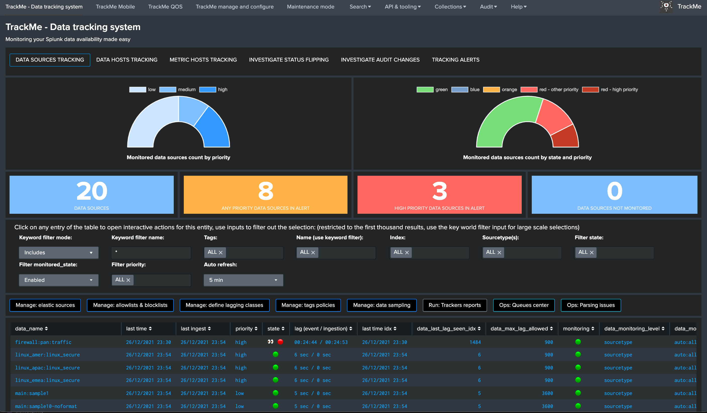{kind=link}
Tip
If the UI is empty and no data sources are showing up:
You can wait for the short term trackers execution which are scheduled to run every 5 minutes
Or manually run the data sources tracker by clicking on the button “Run: short term tracker now” (we will come back to the tracker notion later in this guide)
{kind=link}
Data Sources tracking and features¶
Data Source main screen¶
Let’s click on any entry in the table:
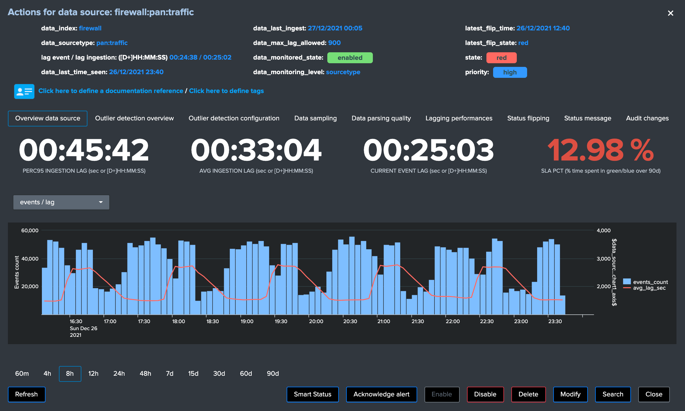{kind=link}
Warning
If you do not see the full window (called modal window), review your screen resolution settings, TrackMe requires a minimal high enough resolution when navigating through the app*
The modal window “open-up” is the user main interaction with TrackMe, depending on the context different information, charts, calculations and options are provided.
In the context of the data sources tracking, let’s have a deeper look at top part of the window:
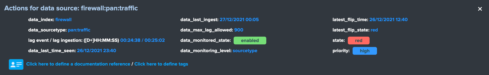{kind=link}
Let’s review these information:
group 1 left screen
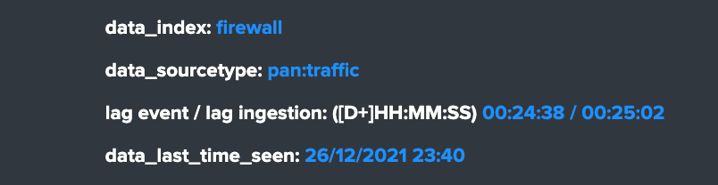data_indexis the name of the Splunk index where the data residesdata_sourcetypeis the Splunk sourcetype for this entitylag event / lag ingestion: ([D+]HH:MM:SS)exposes the two main lagging metrics handled by TrackMe, the lag from the event point of view, and the lag from the ingestion point of view, we will come back to that very soondata_last_time_seenis the last date time TrackMe has detected data available for this data source, from the event time stamp point of view
group 2 middle screen
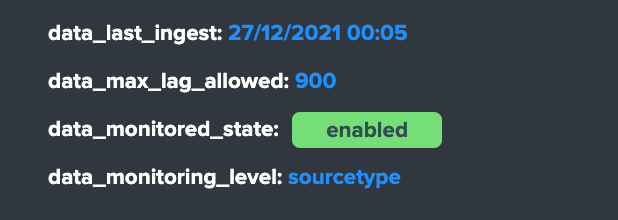data_last_ingestis the last date time TrackMe has detected data ingested by Splunk for the data source, this can differ from the very last event available in the data source (more after)data_max_lag_allowedis the value in seconds that TrackMe will use as the main information to define the status of the data source, by default it is defined to 1 hour (3600 seconds)data_monitored_stateis a flag which tells TrackMe that this data source should be actively monitored, this is “enabled” by default and be defined within the UI to “disabled” (the red “Disable” button in the entity window)data_monitoring_levelis a flag which tells TrackMe how to take into account other sourcetypes available in that same index when defining the current status of the entity
group 3 right screen
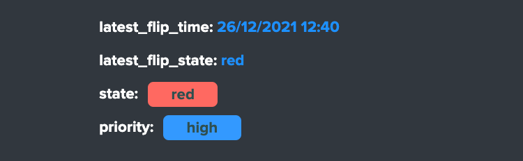latest_flip_timeis the latest date time a change was detected in the state of the entitylatest_flip_statesis the state to which it moved at that timestateis the current state, there are different states: green / orange / blue / grey / red (more explanations to come)priorityrepresents the priority of the entity, by default all entities are added as “medium”, priority is used in different parts of the app and alerts, there are 3 level of priority: low / medium / high
group 4 bottom
{kind=link}
Identity documentation cardis a feature that allows you create an information card (hyperlink and a text note), and link that card to any number of data sources.By default, no identity card is defined which is exposed by this message, if an identity card is created and linked to the entity, the message will turn into a link that once clicked exposes in a new window the context of the card
Use this feature to quickly reference the main information for someone accessing to TrackMe and when there is an issue on the data source, which would provide a link to whatever you want (your Confluence, etc) and a quick help text. (at least a hyperlink or a text note must be defined)
See Data identity card for more details about the feature.
Data source screen tabs¶
Let’s have a look now at next part of the modal window:
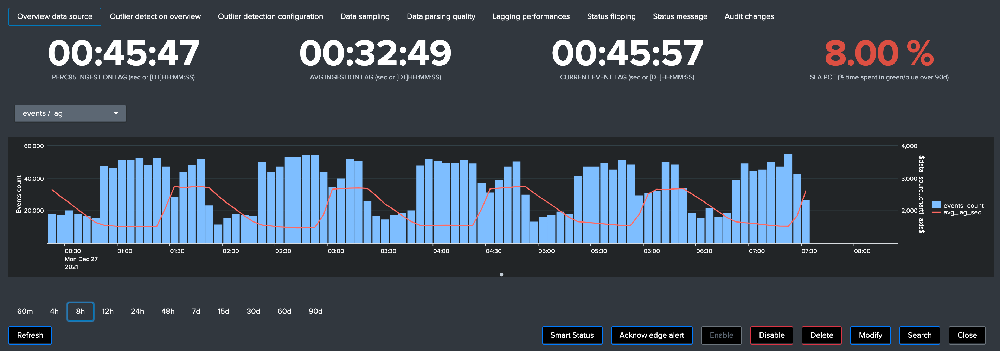{kind=link}
Starting by describing the tabs available in this window:
{kind=link}
Overview data sourceis the current view that exposes the main information and metrics for this entityOutlier detection overviewexposes the event outliers detection chartOutlier detection configurationprovides different options to configure the outliers detectionData samplingshows the results from the data sampling & event format recognition engineData parsing qualityexposes indexing time parsing issues such as truncation issues for this sourcetype, if any.Lagging performancesexposes the event lag and ingestion lag recorded metrics in the metric indexStatus flippingexposes all status flipping events that were stored in the summary indexStatus messageexposes the current status of the data source in a human friendly mannerAudit changesexposes all changes recorded in the audit KVstore for that entity
Overview data source tab¶
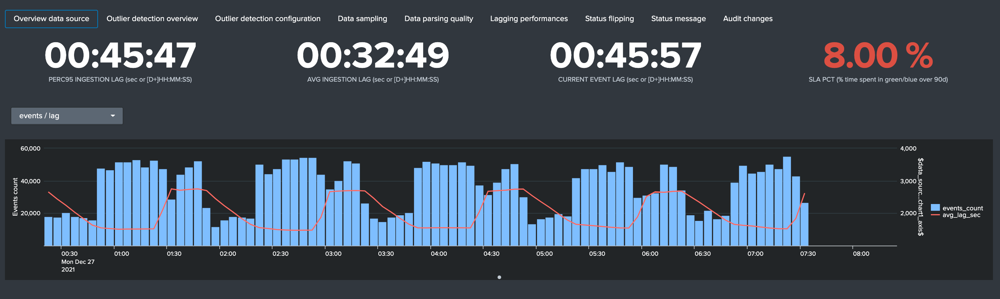{kind=link}
This screen exposes several single forms with the following calculations:
PERC95 INGESTION LAGis the percentile 95 of the lag ingestion determined for this entity (_indextime - _time)AVG INGESTION LAGis the average lag ingestion for that entityCURRENT EVENT LAGis the current event lag calculated for this entity (now() - _time), this basically exposes how late this data source compared between now and the very last event in the entitySLA PCTis the SLA percentage which basically exposes the percent of time that entity has spent in a not green / blue state
Finally, a chart over time exposes the event count and the ingestion lag for that entity.
Outlier detection overview¶
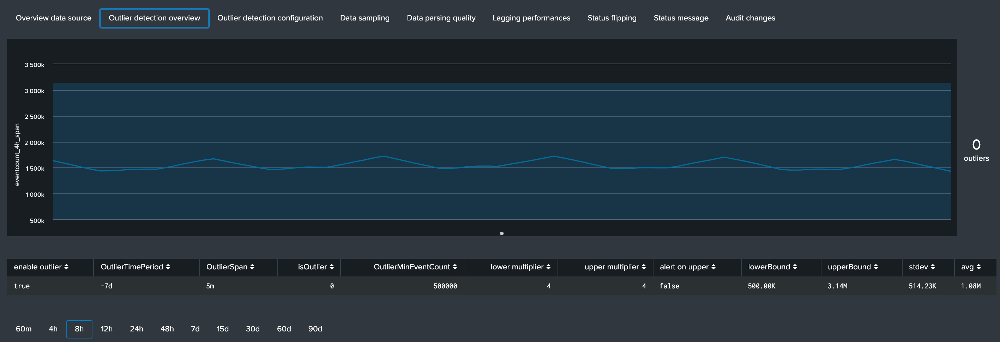{kind=link}
This screen exposes the events outliers detection results over time, the purpose of the outliers detection is to provide advanced capabilities to detect when the number of events produced in the scope of an entity goes below or above a certain level, which level gets automatically defined upon the historical behaviour of the data.
For this purpose, every time the short term tracker runs, it records different metrics which includes the number of events on per 4 hours time window. (which matches the time frame scope of the short term tracker)
Then in short, a scheduled report runs every hour to perform lower bound and upper bound calculations depending on different configurable factors.
Assuming the outliers detection is enabled, if the workflow detects a significant gap in the event count, and optionally an increase too, the state of the entity will be affected and potentially turn red.
The table at the bottom of the screen provides additional information:
enable outliercan be true or false and defines if the outliers detection is taken into account for the state definition of that entityOutlierTimePeriodis a time frame period between a list of restricted values, which defines the time period the backend will be looking at during for the lower bound, upper bound and standard deviation calculationOutlierSpanis used when rendering the outliers over time chart and does not influence the detection (for example if a data source emits data every 30 minutes you will want to apply a more relevant value for a better rendering)isOutlieris the current status, a value of 0 indicates that no outliers are currently active for this entity, a value of 1 indicates TrackMe detected outliers currentlyOutlierMinEventCountis an optional static value that can be defined for the lower bound, this is useful if you want to statically specific the minimal per 4 hours event count to be acceptedlower multiplieris a multiplier that is used for the automatic definition of the lower bound, decreasing or increasing will impact the value of the lower bound definitionupper multiplieris a multiplier that is used for the automatic definition of the upper bound, decreasing or increasing will impact the value of the upper bound definitionalert on upperdefines if upper outliers should be taken into account and affect the state if an abnormal number of events is coming in, default is falselowerBoundis the lower threshold, an event count below this value will be considered as outliersupperBoundis the upper threshold, an event count above this value will be considered as outlier, but will only impact the state if the alert on upper is truestdevis the standard deviation calculated by the workflow for this entity, and is used as the reference for the lower and upper bound calculation associated with the lower and upper multipliersavgrepresents the average 4 hours amount of event count for this entity
See Outliers detection and behaviour analytic for more details about the feature.
Outlier detection configuration¶
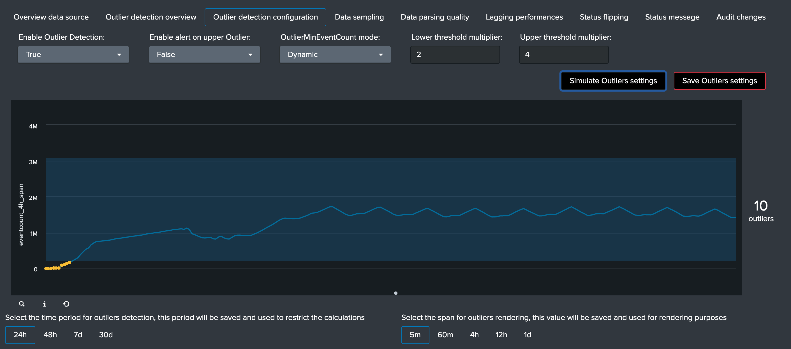{kind=link}
This is the screen provided to configure the outliers detection for a given entity, which exposes a simulation of the results over time, allowing you to train your settings before they are applied.
On the top part of the screen you will interact with the settings exposes in the previous section:
Enable Outlier Detection:you can choose to disable the Outliers detection for a given entity, default is enabledEnable alert on upper Outlier:you can choose to alert on upper outliers detection, default is falseOutlierMinEventCount mode:you can choose to let the workflow defining dynamically the lower bound value, or define yourself a static threshold if you need itOutlierMinEventCount:static lower bound value if static threshold is usedLower threshold multiplier:the multiplier for the lower band calculation, must be a numerical value which will impact the lower bound calculation (the lower the multiplier is, the closer to the actual standard deviation the calculation will be)Upper threshold multiplier:the multiplier for the upper band calculation, must be a numerical value which will impact the upper bound calculation (the lower the multiplier is, the closer to the actual standard deviation the calculation will be)
Finally, there are two time related settings to interact with:
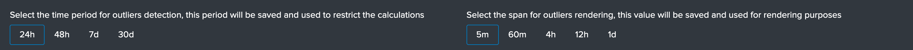{kind=link}
time period for outliers detectiondefines the time frame TrackMe will be looking at for the outliers calculations (lower/upper bands etc) which is using the recorded metrics every time the short term trackers ranspan for outliers renderingis an additional setting which impact the graphical rendering within the outliers screen, but not the results of the outliers detection itself
See Outliers detection and behaviour analytic for more details about the feature.
Data sampling¶
The data sampling tab exposes the status of the data sampling and format recognition engine:
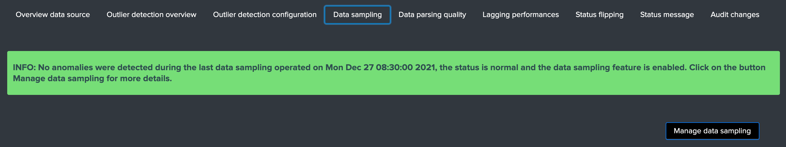{kind=link}
The data sampling message can be:
green:if no anomalies were detectedblue:if the data sampling did not handle this data source yetorange:if conditions do not allow to handle this data source, which can be multi-format detected at discovery, or no identifiable event formats (data sampling will be deactivated automatically)red:if anomalies were detected by the data engine, anomalies can be due to a change in the event format, or multiple events formats detected post discovery
The button Manage data sampling provides summary information about the data samping status and access to data sampling related features:
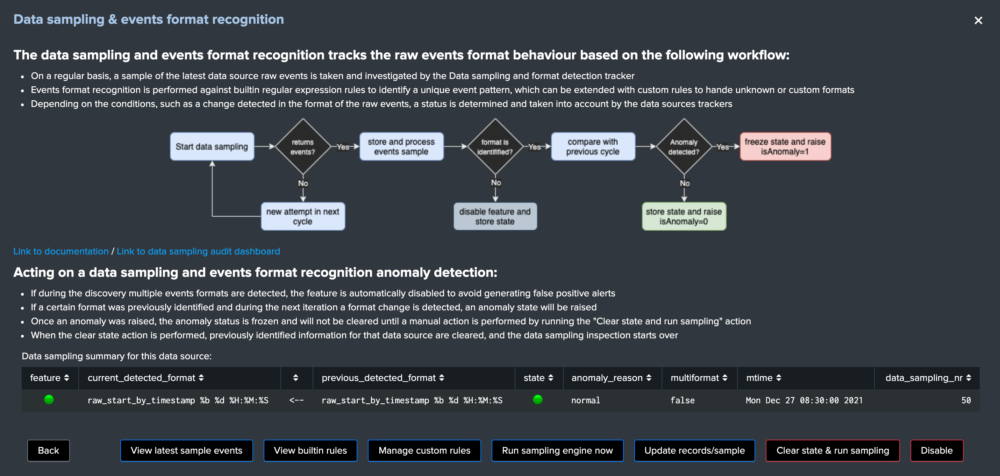{kind=link}
Quick button access:
View latest sample events:open in search access to the last sample of raw events that were processed (raw events and identified format)View builtin rules:view the builtin rules (builtin rules are regular expressions rules provided by default)Manage custom rules:view, create and delete custom rules to handle any format that would not be recognized by the builtin rulesRun sampling engine now:runs the sampling engine now for this data sourceClear state and run sampling:clears the previously known states and run the sampling engine as it was the first time the engine handles this data source
See Data sampling and event formats recognition for more details about the feature.
Data parsing quality¶
The data parsing quality screen exposes if there are any indexing time parsing issues found for this sourcetype:
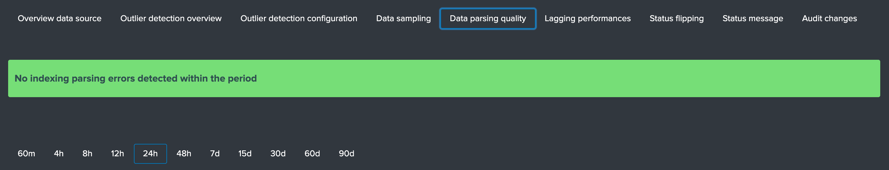{kind=link}
Note: for data sources, the scope of indexing time parsing issues happens on the sourcetype level from a Splunk point of view, this means that if there are any parsing issues found for this sourcetype, this can be linked to this data source but as well with any other data source that looks at the same sourcetype.
Under normal conditions, this screen should not show any parsing errors, if there are any, these should be fixed.
Lagging performances¶
This screen exposes the event and ingestion lagging metrics that have been recorded each time the short trackers ran, these metrics are stored via a call to the mcollect command and stored into a metric store index:
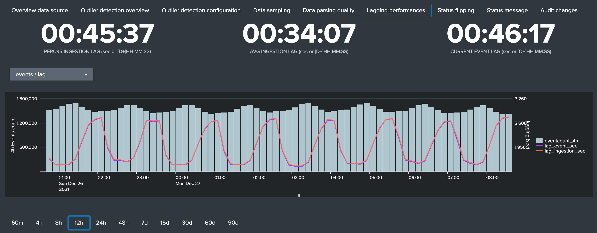{kind=link}
The following mcatalog search can be used to expose the metrics stored in the metric store and the dimensions:
| mcatalog values(metric_name) values(_dims) where index=* metric_name=trackme.*
The main dimensions are:
object_categorywhich represents the type of entities, being data_source or data_hostobjectwhich is the entity unique identifier, data_name for data sources, data_host for data hosts
Status flipping¶
This screen exposes all the flipping status events that were recorded for that entity during the time period that is selected:
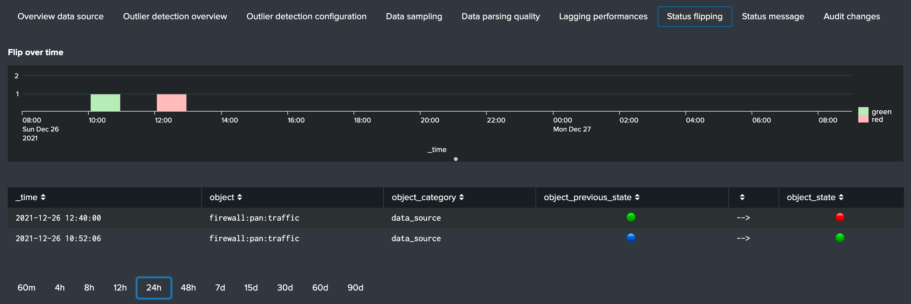{kind=link}
Key information:
Anytime an entity changes from a state to another, a record is generated and indexed in the summary index
When an entity is first added to the collection during its discovery, the origin state will be discovered
The target state is the state (green / red and so forth) that the entity has switched to
Status message¶
This screen exposes a human friendly message describing the current state of the entity, depending on the conditions the message will appear as green, red, orange or blue:
example of a green state:
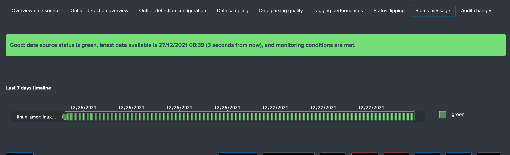{kind=link}
example of a red state due to lagging conditions not met:
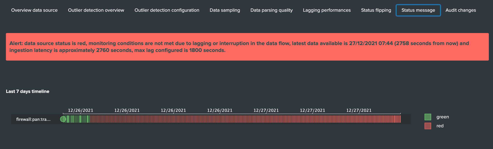{kind=link}
Audit changes¶
This final screen exposes all changes that were applied within the UI to that entity which are systematically recorded in the audit KVstore:
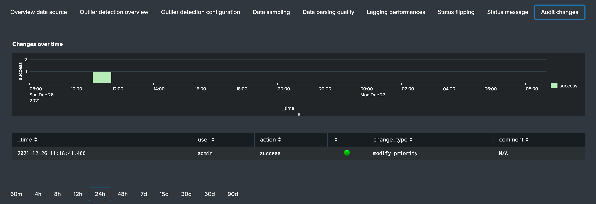{kind=link}
See Auditing changes for more details about the feature.
Action buttons¶
Finally, the bottom part of the screen provides different buttons which lead to different actions:
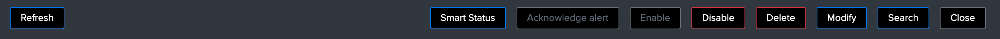{kind=link}
Actions:
Refreshwill refresh all values related to this entity, it will actually run a specific version of the tracker and update the KVstore record of this data source. Charts and other calculations are refreshed as well.Smart Statusis a powerful TrackMe REST API endpoint that does automated analysis and conditional correlations to provide an advanced status of the entity, and fast the investigaton of an issue root cause.Acknowledge alertcan only be clicked if the data source is effectively in a red state, acknowledging an alert prevent the out of the box alerts from triggering a new alert for this entity until the acknowledgment expires.Enablecan only be clicked if the monitoring state is disabled, if clicked and confirmed, the value of the fielddata_monitored_statewill switch from disabled to enabledDisableopposite of the previousModifyprovides access to the unified modification window which allows interacting with different settings related to this entitySearchopens a search window in a new tab for that entity
See Alerts tracking for more details about the acknowledgment feature and alert related configurations
See Data source main settings update for more details about the unified update UI for data sources
Data Hosts tracking and features¶
Rather than duplicating all the previous explanations, let’s expose the differences between the data sources and data hosts tracking.
Data host monitoring¶
Data hosts monitoring does data discovery on a per host basis, relying on the Splunk host Metadata.
To achieve this, TrackMe uses tstats based queries to retrieve and record valuable Metadata information, in a simplistic form this is very similar to the following query:
| tstats count, values(sourcetype) where index=* by host
Particularities of data hosts monitoring¶
The features are almost equivalents between data sources and data hosts, with a few exceptions:
state condition:the data host entity state depends on the global data host alerting policy (which is defined globally and can be overriden on a per host basis)Depending on the policy, he host state will turn red if either no more sourcetypes are generating data (track per host policy), or any of the sourcetypes monitored for the host has turned red (track per sourcetype policy)
Using
allowlists and blocklistsprovide additional granularity to define what data has to be included or is excluded during the searchesOutliers detectionis available for data hosts too and would help detecting significant changes such as a major sourcetype that is not ingested anymorelogical group: a data host can be part of a logical group, this feature is useful for example to handle a couple of active / passive entities (example with firewalls) where the passive entity will not be generating any data activelyobject tags: this is an additional feature to data hosts and metric hosts that allows looking against a third party lookup, such as your CMDB data stored in Splunk, or the Splunk Enterprise Security assets knowledge, to provide an active link and access quickly these enrichment information
See Logical groups (clusters) for more details on this feature
See Enrichment tags for more details om this feature
Additionally, if there has been indexes migrations, or if one or more sourcetypes have been decomissioned, this will affect the state of a given host if the alert policy is defined to track per sourcetype, you can reset the knowledge of indexes and sourcetypes on a per host basis via the reset button:
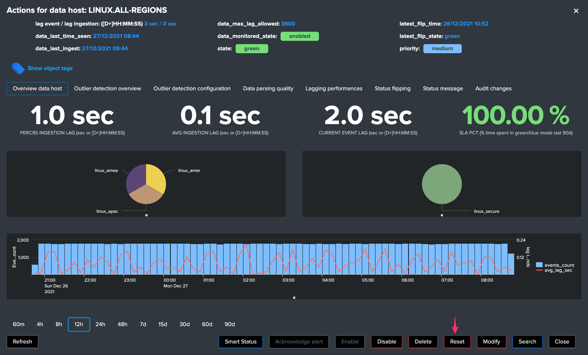{kind=link}
Metric Hosts tracking and features¶
Metric hosts tracking is the third main notion in TrackMe, and deals with tracking hosts sending metrics to the Splunk metric store, let’s expose the feature particularities.
Metric host monitoring¶
The metric hosts feature tracks all metrics send to the Splunk metric store on a per host basis.
In a very simplistic form, the notion is similar to performing a search looking at all metrics with mstats on a per host basis and within a short time frame:
| mstats latest(_value) as value where index=* metric_name="*" by metric_name, index, host span=1s
Then, the application groups all metrics on per metric metric category (the first metric name segment) and a per host basis.
Particularities of metric hosts monitoring¶
Compared to data sources and data hosts tracking, metric hosts tracking provides a similar level of features, with a few exceptions:
state condition:the metric host state is conditioned by the availability of each metric category that was discovered for that entityShall a metric category stop from being emitted, the state will be affected accordingly
Using
allowlists and blocklistsprovide additional granularity to define the include and exclude conditions of the metric discoveryOutliers detectionis not available for metrics hostslogical group: a metric host can be part of a logical group, this feature is useful for example to handle a couple of active / passive entities (example with firewalls) where the passive entity will not be generating any metrics activelyobject tags: this is an additional feature to data hosts and metric hosts that allows looking against a third party lookup, such as your CMDB data stored in Splunk, or the Splunk Enterprise Security assets knowledge, to provide an active link and access quickly these enrichment informationMetric hosts tracking relies on the
default max lag allowedpermetric categorywhich is defined by default to 5 minutes (300 seconds) and can be managed by creatingmetric SLA policiesThe entity screen provides some metric specific search options to provide insights against these specific entities and their metrics
Additionally, if a metric category stops being emitted this affects the global status of the entity, if these metrics are decomissioned you can reset the host metrics knowledge:
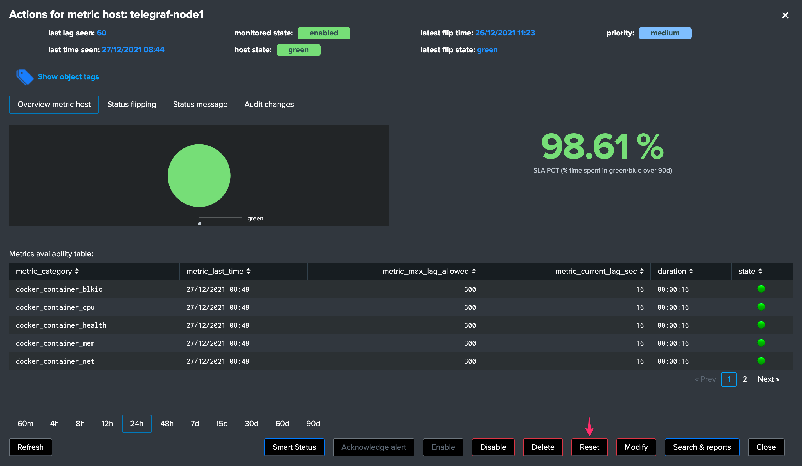{kind=link}
Triggering this action will remove the current knowledge of metric categories for this entity only and trigger a fresh discovery without losing additional settings like the priority.
See Logical groups (clusters) for more details on this feature
See Enrichment tags for more details om this feature
Entities main setting update screens¶
For each type of entities, a main settings screen update is available by clicking on the modify button when looking at a specific entity:
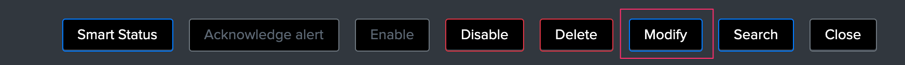{kind=link}
These interfaces are called unified as their main purpose is to provide a central place in the UI where the modification of the main key parameters would be achieved.
In this screens, you will define the priority level assignment, modify the lagging policy, manage logical groups, etc.
{kind=link}
{kind=link}
{kind=link}
Main settings update interface features¶
Lag monitoring policy:
In this part of the screen you will define:
The
max lag allowedvalue that conditions the state definition of the entity depending on the circumstancesThis value is in
secondsand will be taken into account by the trackers to determine the colour of the stateOverride lagging classesallows bypassing any lagging class that would have defined and could be matching the conditions (index, sourcetype) of this entityYou can choose which
KPIswill be taken into account to determine the state regarding themax lag allowedand the two main lagging performance indicatorsFor data hosts, the
alerting policyallows controlling how to consider the green/red state assignment in regards with the state of each sourcetype indexed by the host
See Lagging classes for more details about the lagging classes feature.
See Alerting policy for data hosts for more details about the alerting policy feature.
Priority:
This is where you can define the priority of this entity. The priority is by default set to medium can by any of:
lowmediumhigh
Using the priority allows granular alerting and improves the global situation visibility of the environment within the main screens.
See Priority management for more details about this feature
Week days monitoring:
Week days monitoring allows using specific rules for data sources and data hosts regarding the day of the week, by default monitoring rules are always applied, therefore using week days rules allow influencing the red state depending on the current day of the week. (which would switch to orange accordingly)
Hours ranges monitoring:
Similarly to the week days monitoring, you can specify for each entity the hours ranges of the day when the monitoring condition apply.
In a nutshell, this means that you can specify which periods of the day a given entity can switch to red, and therefore be included in your alerting workflow.
If the current hour range is not included in the monitoring rules, the entity would turn orange rather than red.
See Hours ranges monitoring for more details about this feature
Monitoring level:
This option allows you to ask TrackMe to consider the very last events available at the index level rather than the specific sourcetype related to the entity.
This influences the state definition:
If a data source or host is set to
sourcetype, what conditions the state is meeting the monitoring rules for that sourcetype only (default behaviour)If it is set to
index, instead of defining a red state because the monitoring conditions are not met, we will consider if there are events available at the index level according to the monitoring rulesThe purpose of this feature is to allow interacting with this data source (in that context let’s talk about sourcetypes) without generating an alert as long as data is actively sent to that index
Associate to a logical group:
This option allows grouping data hosts and metric hosts into logical groups which are taken in consideration by groups rather than per entity.
See Logical groups (clusters) for more details about this feature.
Alerting policy: (data hosts only)
This option allows controlling on a per host basis the behaviour regarding the sourcetypes monitoring per host.
See Alerting policy for data hosts for more details about this feature.
Host distinct count threshold: (data sources only)
In some cases, you may want to be alerted when the number of distinct count hosts underneath a data source goes below a certain threshold.
Expected values are:
“any” (default) which disables any verification against the hosts distinct count number
A positive integer representing the minimal threshold for the dcount of hosts, if the current dcount goes below this value, the data source turns red
Hybrid trackers¶
Introduction to Hybrid Trackers¶
What are hybrid trackers for?
The purpose of Hybrid trackers is to address two essential needs, custom key special entities split, and remote Splunk deployment monitoring
custom key special entities is to be used when you have special requirements in addition with the default index/sourcetype data source concept, then you can rely on any additional key field (indexed or search time extracted) and create hybrid trackers without affecting the general data sources behaviour
For instance, you could create an hybrid tracker to automatically create entities for your Cloud provider data using a subscription_id field, and get a single entity per index / sourcetype / Cloud tenant (represented by its subscription_id)
Another example, you could create an hybrid tracker to create entities based on a company fields which describes subsidiaries in your data sets, generating entities per index / sourcetype / company
Finally, remote Splunk deployment monitoring is a magic feature of TrackMe which allows to do all of these, index/sourcetype entities or with a custom key, but with any remote Splunk deployment configured as an account and using a bearer token for the authentication
In short, you can transparently and easily monitor data from remote Splunk deployments, just as if these were local data sets, with all trackMe features and massive scalability and efficiently!
Hybrid trackers for local data sets with a custom key¶
Let’s take the followin simple example:
On the local Splunk deployment (meaning data that TrackMe can transparenly access to), we have two indexes firewall and network which contains data for multiple company: amer, apac and emea
By default, TrackMe generates two entities (assuming we have one sourcetype per index): firewall:pan:traffic and network:pan:traffic
However, this does not allow us to track each region independently, as all regions are covered in each of the entities
Before the hybrid trackers, we could have covered the requirements in two ways: updating the global discovery scheme, or creating an Elastic Source for each couple of index/sourcetype/region
Both approaches have inconvenients, in the first case we modify the discovery for all entities which is likely problematic, in the second the approach is not very efficient and requires many manual actions, and is potentially expensive in term of compute
By creating an hybrid tracker to address our needs, we get:
Entities created and maintained automatically, respecting our custom key transparenly
A single schedule report which acts efficiently and saves computing costs in a scalabable way
We do not affect the standard entities discovery at any point in time
We can create as many hybrid trackers as we need to address our requirements
Requirements:
The custom key can be either an indexed field, or a search time extracted field
Ideally, using an indexed field is more efficient and uses less computes, as it allows TrackMe to use a tstats based hybrid tracker, however, both are supported
The custom key needs to be searcheable in TrackMe transparently, using
field="value"
Creating our hybrid local tracker with a region custom key¶
From the TrackMe main UI, click on the “manage hybrid trackers” button:
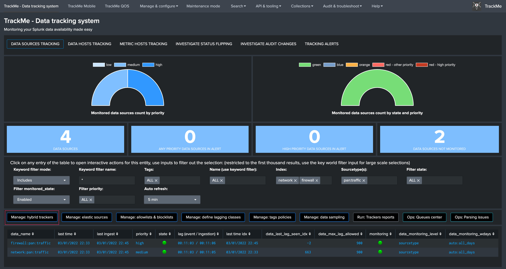{kind=link}
Click on the “Create a new hybrid local tracker” button from this screen:
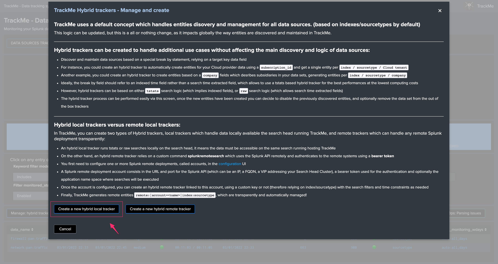{kind=link}
Fill in the required information, and click on simulate to review the results before creating the tracker:
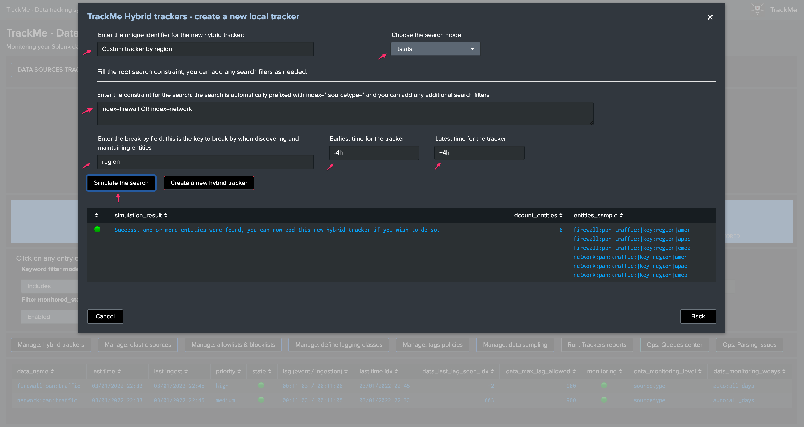{kind=link}
About:
unique identifier: A custom identifier of your choice, defines the name of the tracker report automaticallysearch mode: Defines if the tracker relies on a tstats based searches and uses a custom key based on an indexed field, or a standard raw search whichs allows both indexed and search time extracted fieldsroot search constraint: The Splunk root search constraint, depending on the type of search (tstats versus raw), fields need to be available at the indexed time using tstats, search time using a standard raw searchbreak by field: The custom key fieldearliest: The earliest time quantifier, restricts the search time earliest scopelatest: The latest time quantifier, restricts the search time latest scope
Simulation results:
The simulation results shows an overview of the entities discovered at the time of the simulation run
It shows the total number of discovered entities, and a sample of the first 10 entities discovered
Finally, click on “Create a new hybrid tracker” to perform the tracker creation effectively:
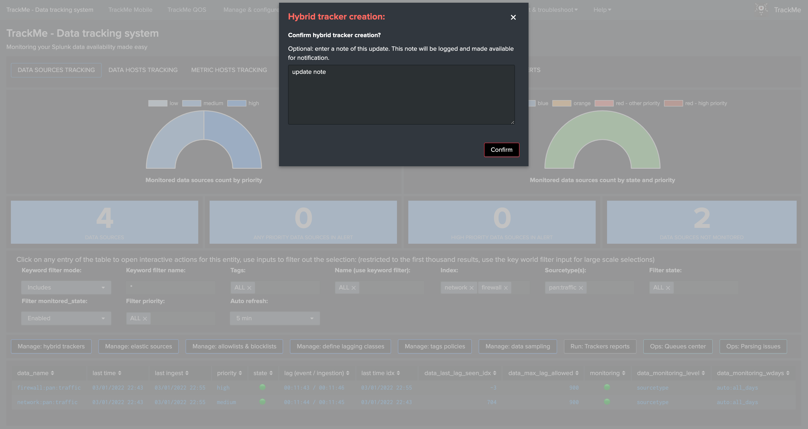{kind=link}
You can run the tracker immediately:
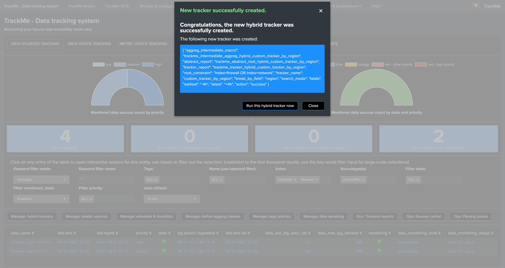{kind=link}
Right after the tracker run, our new entities are visible:
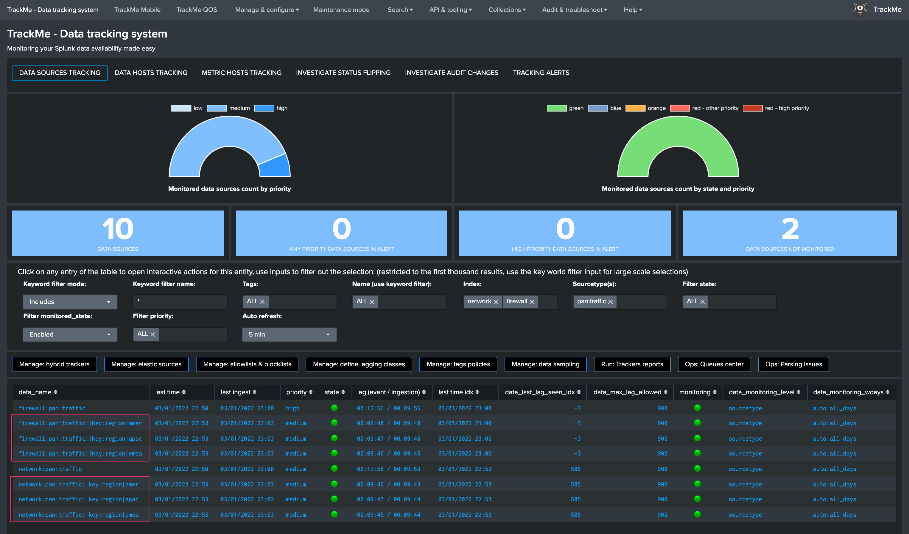{kind=link}
depending on the search mode, tstats versus raw:
in tstats mode, the new entity is named as
<index>:<sourcetype>:|key:<custom_key_fieldname>:<custom_key_fieldvalue>in raw mode, the new entity is named as
<index>:<sourcetype>:|rawkey:<custom_key_fieldname>:<custom_key_fieldvalue>
When opening the entity, TrackMe automatically identities the custom key context, extracts the field name and value to construct all the needed searches:*
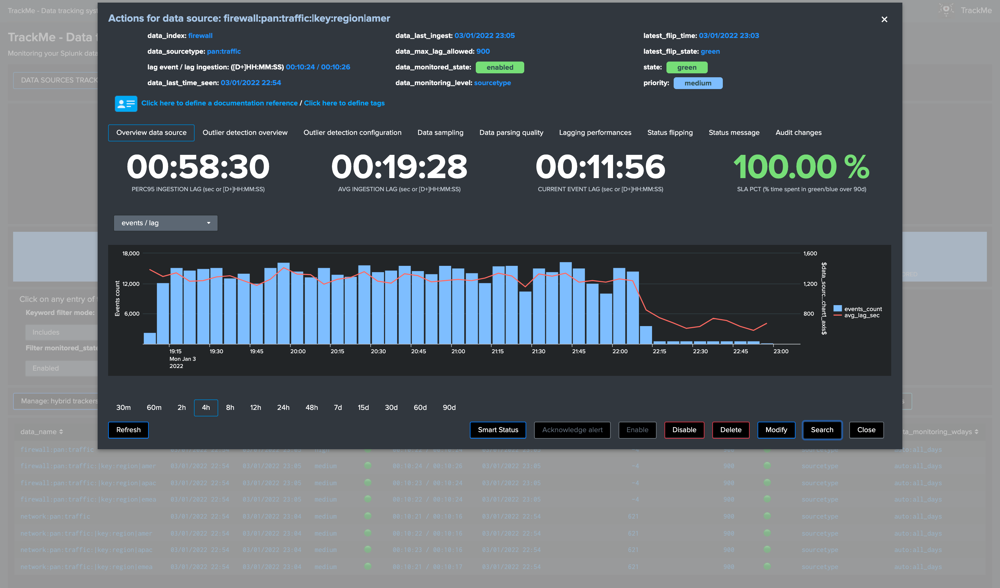{kind=link}
The new scheduled report is a standard report which can be reviewed in Splunk core:
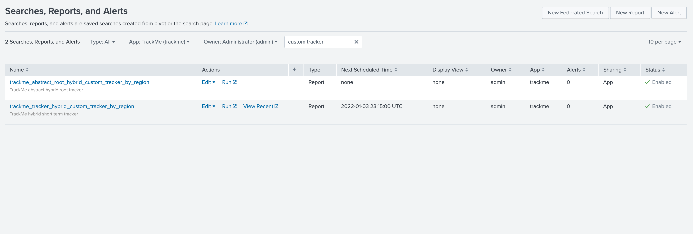{kind=link}
What about the out of the box entities?
The easiest and fastest is to disable the original entities within the UI, these entities will not be visible and considered any longer.
Hybrid trackers for remote Splunk deployment monitoring¶
In addition with the data available in our local environment, where TrackMe is hosted, you can monitor one or more remote Splunk deployment using hybrid remote trackers:
An account gets configured in the configuration UI, which represents the Splunk remote deployment to be monitored
This account consists in an identifier for the account, the URL and port of the Splunk API and the bearer token value used for the authentication
Finally, am hybrid remote tracker is configured and created, Trackme automatically relies in a custom command named
splunkremotesearchto handle remote data sources transparentlyWhen the hybrid tracker runs, a single search is operated to the remote system via the Splunk API, allowing scalabable and efficient searches at the lowest computing costs
Requirements:
The Splunk API on the remote system can be reached, this is compatible with Splunk Enterprise on-premise deployments and as well Splunk Cloud (the API access needs to be requested to Cloud Ops)
A bearer token needs to be created on the remote system, the token needs to be linked to a Splunk user account that can access to the data sets effectively
Creating the hybrid remote tracker¶
First, we need to setup the Splunk remote deployment account, from the main UI:
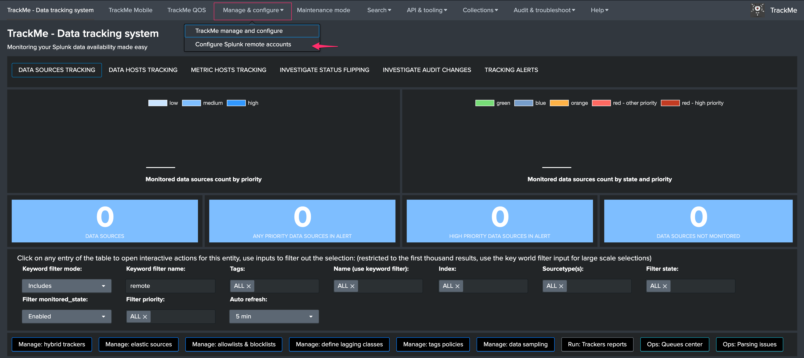{kind=link}
In the Splunk remote deployment account, create a new account, example:
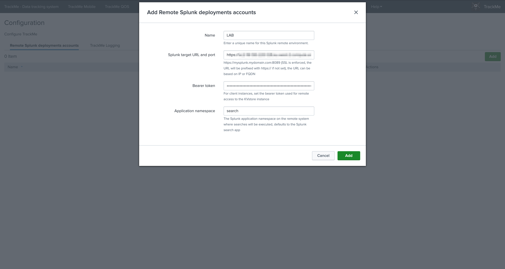{kind=link}
Account creation nodes:
The account name is important as it will be part of the name of each entity to be created for the remote deployment, in the format:
remote:|account=<name>|index:sourcetypeThe URl is https enforced, and should include the port number of the Splunk API, traditionally your URL would look like:
https://mysplunk.mydomain.com:8089The URL can either be an IP address or ideally a FQDN, if you are running a Search Head Cluster, then the URL would ideally refer to the VIP or load balancer FQDN
The bearer token is to be configured on the remote Splunk Search Head(s), and should be linked to a Splunk user account with enough privileges to access the indexes you need
The application namespace is search and reporting by default, however you can choose a different application context if needed
Click on the “Create a new hybrid local tracker” button from this screen:
Hint
Hybrid remote trackers can be based on the standard break by field scheme (index/sourcetype), or you can use a custom key to rely on a additional field (index/sourcetype/custom key)
A search constraint is optional, and can be used to scope and restrict easily the data sets on the remote Splunk deployment
{kind=link}
Fill in the required information, and click on simulate to review the results before creating the tracker:
Example with a constraint restricting indexes, and a standard break by based on index/sourcetype:
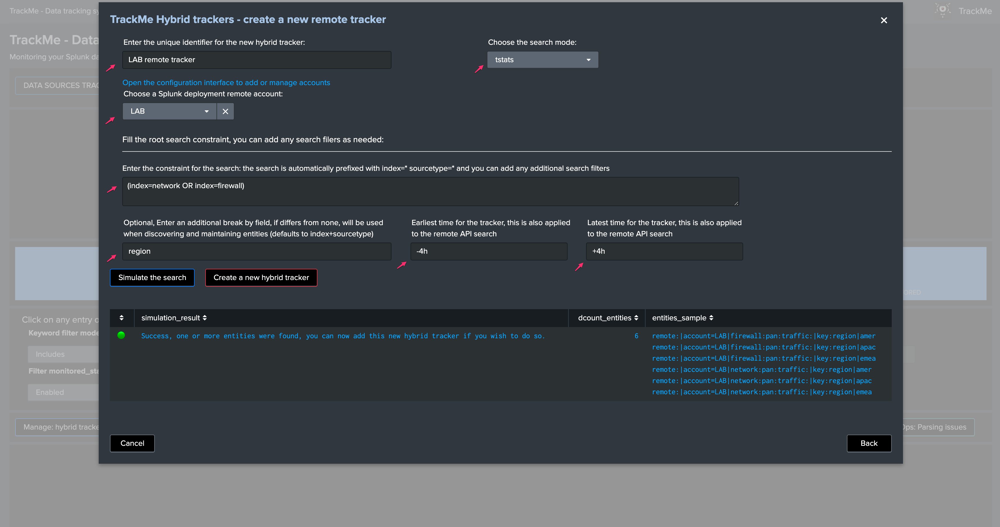{kind=link}
About:
unique identifier: A custom identifier of your choice, defines the name of the tracker report automaticallyaacount: Select the Splunk remote deployment account in the dropdown selectorsearch mode: Defines if the tracker relies on a tstats based searches, or a standard raw search whichs allows both indexed and search time extracted fieldsroot search constraint: Optional, the Splunk root search constraint, depending on the type of search (tstats versus raw), fields need to be available at the indexed time using tstats, search time using a standard raw searchbreak by field: Optional, break with an additional custom key fieldearliest: The earliest time quantifier, restricts the search time earliest scopelatest: The latest time quantifier, restricts the search time latest scope
Simulation results:
The simulation results shows an overview of the entities discovered at the time of the simulation run
It shows the total number of discovered entities, and a sample of the first 10 entities discovered
remote entities naming conventions:
Every remote entity uses a naming convention as follows:
remote:|account=<name>|index:sourcetypefor tstats based tracker,remoteraw:|account=<name>|index:sourcetypefor raw based trackerIf you a tstats based custom key:
remote:|account=<name>|index:sourcetype|key:<custom_key_fieldname>|<custom_key_fieldvalue>If you a raw based custom key:
remoteraw:|account=<name>|index:sourcetype|rawkey:<custom_key_fieldname>|<custom_key_fieldvalue>
Finally, click on “Create a new hybrid tracker” to perform the tracker creation effectively:
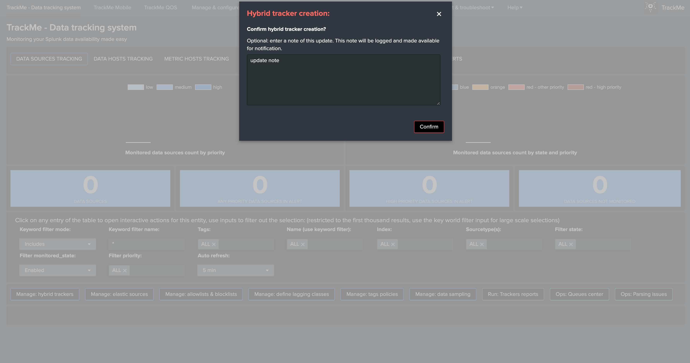{kind=link}
You can run the tracker immediately:
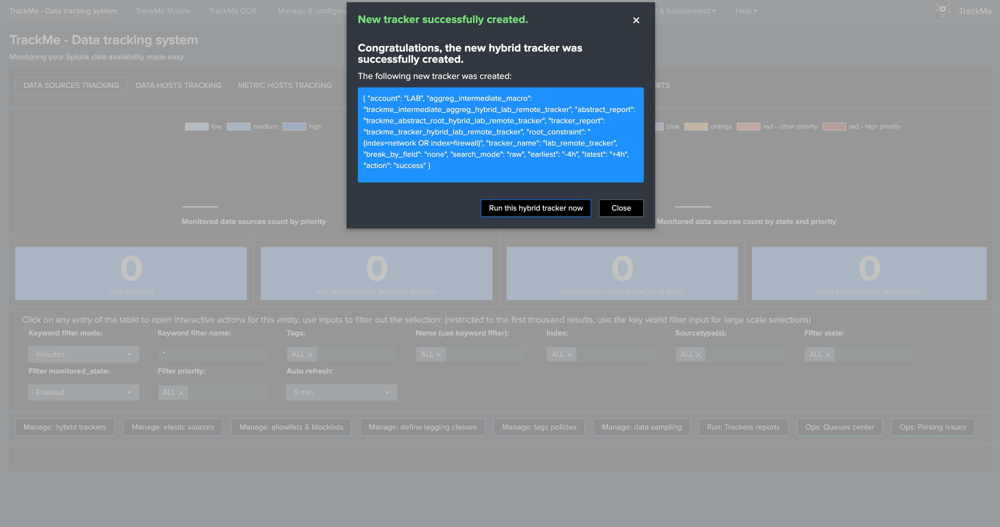{kind=link}
When opening an entity, TrackMe automatically detects the fact that this entity is a remote entity, and constructs the searches using the splunkremotesearch custom command:
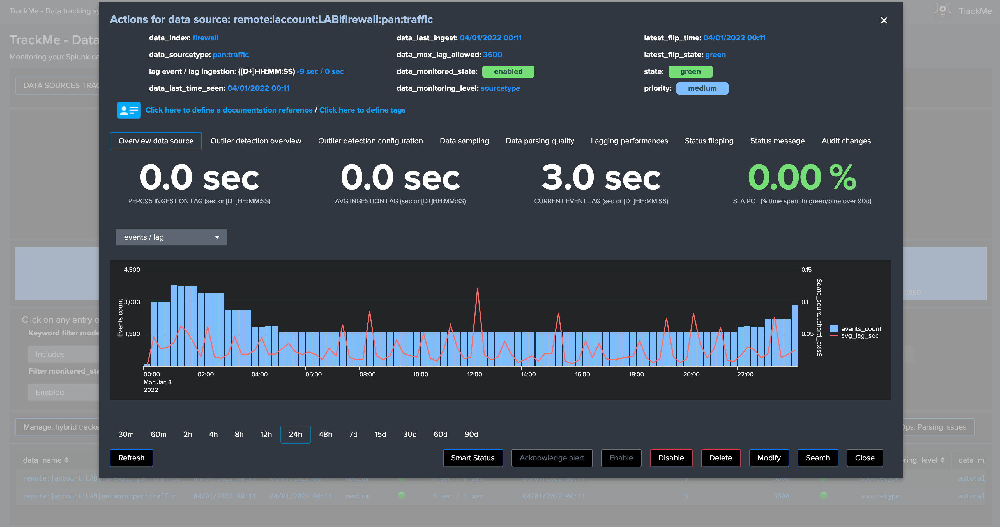 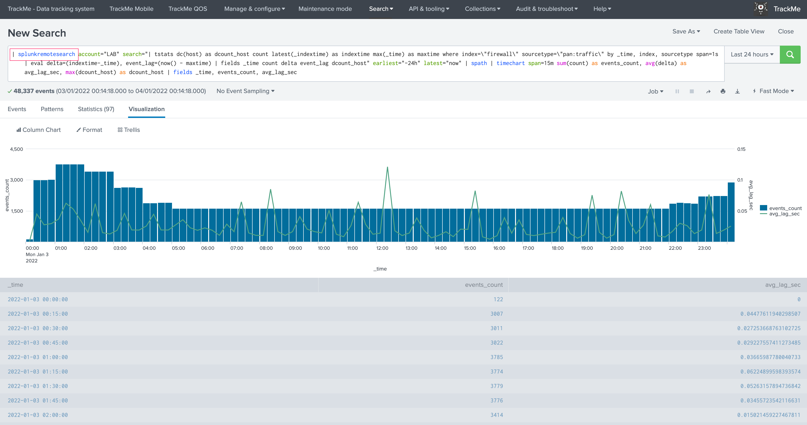{kind=link}
{kind=link}
Any failure encountered by the splunkremotesearch command will be logged in the _internal:
index=_internal sourcetype=trackme:custom_commands:splunkremotesearch
Finally!
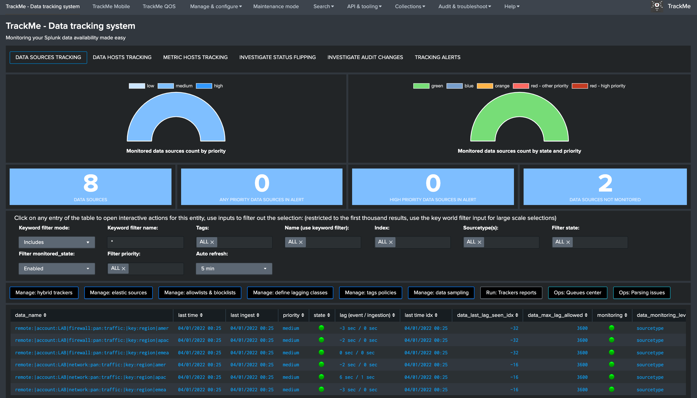{kind=link}
Elastic sources¶
Introduction to Elastic sources¶
Elastic sources feature
The Elastic sources feature provides a builtin workflow to create virtual data sources based on any constraints and any Splunk language
This extends TrackMe builtin features to allow dealing with any use case that the default data source concept does not cover by design
Elastic Sources can be based on
tstats,raw,from (datamodel and lookup)andmstatssearchesIn addition, Elastic Sources can be executed over a remote Splunk deployment using the
splunkremotesearchcommand which allows tracking data that the search head(s) hosting TrackMe cannot access otherwise (such as a lookup that is only available to a Search Head Cluster while you run TrackMe on a monitoring utility search head)
As we have exposed the main notions of TrackMe data discovery and tracking in Main navigation tabs, there can be various use cases that these concepts do not address properly, considering some facts:
Breaking by index and sourcetype is not enough, for instance your data pipeline can be distinguished in the same sourcetype by breaking on the
Splunk source MetadataIn a similar context, enrichment is performed either at indexing time (ideally indexed fields which allow the usage of tstats) or search time fields (evaluations, lookups, etc), these fields represent the keys you need to break on to address your requirements
With the default
data sourcestracking, this data flow will appear as one main entity and you cannotdistinguisha specific part of your data covered by the standard data source featureSpecific
custom indexed fieldsprovideknowledgeof the data in your context, such ascompany,business unitetc and these pipelines cannot be distinguished by relying on theindexandsourcetypeonlyYou need to address any use case that the default main features do not allow you to
Hint
The Elastic source feature allows you to fulfil any type of requirements from the data identification and search perspective, and transparenly integrate these virtual entities in the normal TrackMe workflow with the exact same features.
Since TrackMe 2.0, you can as well create hybrid trackers for the nearly same purposes with advantages over Elastic Sources (hybrid trackers can only address tstats and raw searches)
Unlike Elastic Sources, Hybrid trackers allow you to perform the discovery of many entities based on a given logic but from a single operation and automatically, saving computes and operations
If you have many entities to be handled, such as a logic based on a subscription_id for a Cloud provider, use hybrid trackers rather than Elastic Sources
Consult Hybrid trackers for more information about hybrid trackers
The concept of “Elastic Sources” is proper to TrackMe, and is linked to the complete level of flexibility the feature provides you to address any kind of use cases you might need to deal with.
In a nutshell:
An Elastic source can be added to the
shared tracker, or created as anindependent trackerThe search language can be based on
| tstats,rawsearches,| fromand| mstatscommandsAdditionally, these searches can be run remotely over the Splunk rest API to address use cases where the data is not accessible to the search head(s) hosting TrackMe
The shared tracker is a specific scheduled report named
TrackMe - Elastic sources shared trackerthat tracks in a single schedule execution all the entities that have been declared as shared Elastic sources via the UIBecause the
shared trackerperforms asingle execution, there are performance considerations to take into account and the shared tracker should be restricted to very efficient searches in term of run timeIn addition,
Elastic sources sharedhave time frame restrictions which are the earliest and latest values of the tracker, you can restrict a shared entity time scope below these values but not beyondA
dedicated Elastic sourceis created via the UI which generates a new tracker especially for itAs the dedicated Elastic source has its
own schedule report, this provides more capabilities to handle fewer performing searches and as well more freedom to address basically any kind of customisationDedicated Elastic sourcescan be configured to address any time scope you need, and any search that is required including any advanced customisation you would need
Accessing the Elastic source creation UI¶
First, let’s expose how to access the Elastic sources interface, from the data sources tab in the main UI, click on the Elastic Sources button:
{kind=link}
The following screen appears:
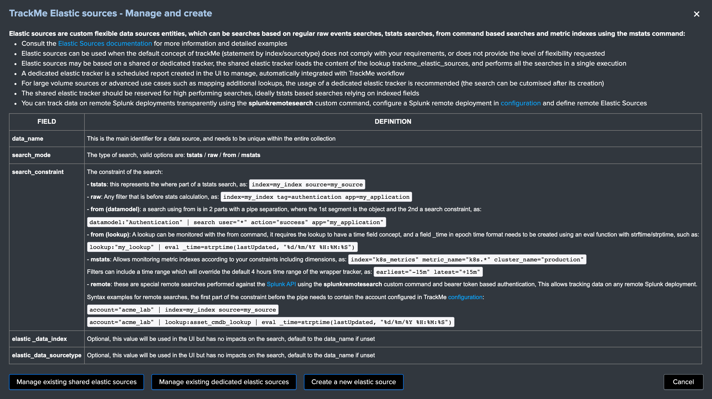{kind=link}
Elastic source example 1: source Metadata¶
Hint
Since TrackMe 2.0, this use case example is much better covered by hybrid trackers, and left for the purposes of the documentation
Consult Hybrid trackers for more information about hybrid trackers
Let’s take our first example, assuming we are indexing the following events:
data flow1 : firewall traffic for the region AMER
index="network" sourcetype="pan:traffic" source="network:pan:amer"
data flow2 : firewall traffic for the region APAC
index="network" sourcetype="pan:traffic" source="network:pan:apac"
data flow3 : firewall traffic for the region EMEA
index="network" sourcetype="pan:traffic" source="network:pan:emea"
It is easy to understand that the default standard for data source index + ":" + sourcetype does not allow us to distinguish which region is generating events properly, and which region would not:
{kind=link}
In TrackMe data sources, this would appear as one entity and this is not filling our requirements for that use case:
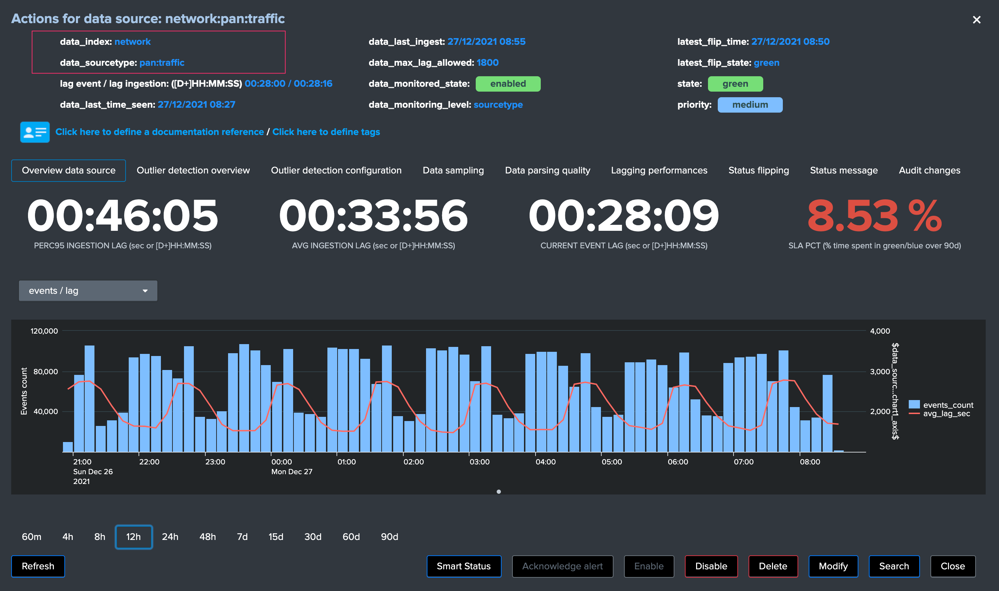{kind=link}
What if I want to be monitoring the fact that the EMEA region continues to be indexed properly ? and other regions ?
Elastic Sources is the TrackMe answer which allows you to extend the default features with agility and address easily any kind of requirement transparently in TrackMe.
Elastic source example 2: custom indexed fields¶
Hint
Since TrackMe 2.0, this use case example is much better covered by hybrid trackers, and left for the purposes of the documentation
Consult Hybrid trackers for more information about hybrid trackers
Let’s extend a bit more the first example, and this time in addition with the region we have a company notion.
At indexing time, two custom indexed fields are created representing the “region” and the “company”.
Custon indexed fields can be created in many ways in Splunk, it is a great and powerful feature as long as it is properly implemented and restricted to the right use cases.
This example of excellence allows our virtual customer to work at scale with performing searches against their two major enrichment fields.
Assuming we have 3 regions (AMER / EMEA / APAC) and per region we have two companies (design / retail), to get the data of each region / company I need several searches:
index="firewall" sourcetype="pan:traffic" region::amer company::design
index="firewall" sourcetype="pan:traffic" region::amer company::retail
index="firewall" sourcetype="pan:traffic" region::apac company::design
index="firewall" sourcetype="pan:traffic" region::apac company::retail
index="firewall" sourcetype="pan:traffic" region::emea company::design
index="firewall" sourcetype="pan:traffic" region::emea company::retail
Note the usage of “::” rather than “=” which indicates to Splunk that we are explicitly looking at an indexed field rather a field potentially extracted at search time.
Indeed, the default data source feature does fill the requirements we need for this use case:
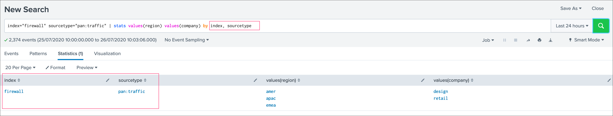{kind=link}
Rather than one data source that covers the index/sourcetype, the requirement is to have 6 data sources that cover each couple of region/company.
Any failure on the flow level which is represented by these new data sources will be detected. On the opposite, the default data source breaking on the sourcetype would need a total failure of all pipelines to be detected.
By default, the data source would show up with a unique entity which is not filling our requirements:
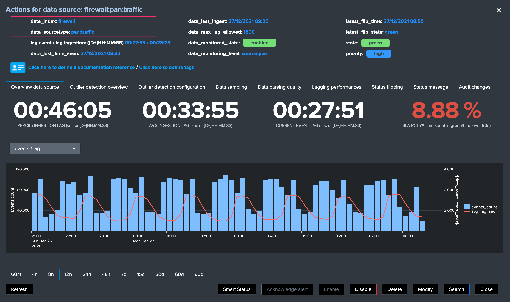{kind=link}
The default concept while powerful does not cover my need, but ok there we go and let’s extend it easily with Elastic sources!
Elastic source example 3: tracking lookups update and number of records¶
It is a very common and powerful practice to generate and maintain lookups in Splunk for numbers of purposes, which can be file based lookups (CSV files) or KVstore based lookups.
A common caveheat with lookups is that their update is driven by Splunk searches, there are plenty of reasons why a lookup could stop being populated and maintained, such as scheduling issues, permissions, related knowledge objects updates, lack or changes in the data, and many more.
The purpose of this example is to provide a builtin and efficient way of tracking Splunk lookup updates at scale in the easy way, and get alerted if an update issue is detected in the lookup according to the policies defined in TrackMe.
Let’s consider the simplistic following example, the lookup acme_assets_cmdb contains our ACME assets and is updated every day, we record in the field “lastupdate” the date and time of the execution of the Lookup gen report in Splunk. (in epoch time format)
{kind=link}
The unique requirement for TrackMe to be able to monitor a lookup is to have a time concept which can use to define as the _time field which TrackMe will rely on.
Lookups have no such thing of a concept of _indextime (time of ingestion in Splunk), therefore TrackMe will by default make the index time equivalent to the latest _time from the lookup, unless the Splunk search that will be set in the Elastic Source defines a value based on information from the lookup.
Monitoring lookups with TrackMe allow you to:
Get automatically alerted when the last update of the lookup is older than a given amount of time (which could indicate an issue on the execution side, such as an error introduced in the SPL code maintaining the lookup, a knowledge object that is missing, etc)
Monitor and track the number of records, the outliers detection will automatically monitor the number of records in the lookup (which outliers settings can be fine tuned up to your needs, you could even gets alerted if the number of records goes beyond a certain limit)
The following example shows the behaviour with a lookup that is updated every 30 minutes:
{kind=link}
A Lookup based Elastic Source acts transparently just as any other data source, so you can setup:
delays KPIs: how often shall the lookup be updated, which allows you to monitor that your update process (reports, etc) remains valid and operational
volume outliers: to automatically be alerted when the number of records is abnormal, and easily detects critical failures in your lookup update process
Elastic source example 4: remote searches¶
Hint
Since TrackMe 2.0, hybrid remote trackers can handle remote Splunk deployments monitoring at scale, with much more advantages over Elastic Sources in term of compute and operational costs
This depends on the use cases, hybrid trackers handle tstats and raw searches only (not datamodels or lookups)
Consult Hybrid trackers for more information about hybrid trackers
In some cases, the Splunk instance that hosts the TrackMe application may not be able to access the data sets you wish to monitor.
You have a Splunk Search Head Cluster, hosting for example your premium application for ITSI or Enterprise Security
In addition, you either use your monitoring console host or a dedicated standalone search head for your Splunk environment monitoring, which is where TrackMe is deployed
A lookup exists in the SHC which is the object you need to monitor, this lookup is only available to the SHC members and TrackMe cannot access to its content transparently
TrackMe provides a custom command named splunkremotesearch which performs searches to remote Splunk deployments using the Splunk API and an account you configure:
In the Splunk remote deployment account, create a new account, example:
Account creation nodes:
The account name is important as it will be part of the name of each entity to be created for the remote deployment, in the format:
remote:|account=<name>|index:sourcetypeThe URl is https enforced, and should include the port number of the Splunk API, traditionally your URL would look like:
https://mysplunk.mydomain.com:8089The URL can either be an IP address or ideally a FQDN, if you are running a Search Head Cluster, then the URL would ideally refer to the VIP or load balancer FQDN
The bearer token is to be configured on the remote Splunk Search Head(s), and should be linked to a Splunk user account with enough privileges to access the indexes you need
The application namespace is search and reporting by default, however you can choose a different application context if needed
Examples for each type of search which you will enter within the Elastic Search UI:
tstats over rest:
account="LAB" | index=* sourcetype=pan:traffic
raw search over rest:
account="LAB" | index=* sourcetype=pan:traffic
from datamodel over rest:
account="LAB" | datamodel:"Authentication" action=*
from lookup over rest:
account="LAB" | from lookup:acme_assets_cmdb | eval _time=strftime(lastupdate, "%s")
mstats over rest:
account="LAB" | index=* metric_name=docker*
As a conclusion, using the rest based searches features successfully completes the Elastic Sources level of features, such that every single use case can be handled in TrackMe, whenever the Splunk instance cam access or not to the data you need to track!
Elastic source example 1: creation¶
Now, let’s create our first Elastic Source which will meet our requirement to rely on the Splunk source Metadata, click on create a new Elastic source:
Which opens the following screen:
{kind=link}
Summary:
Define a name for the entity, this name is the value of the field
data_nameand needs to be unique in TrackMeShall that name you provide not be unique, a little red cross and a message will indicate the issue when we run the simulation
We choose a
search language, because the source field is a Metadata, this is an indexed field and we can use the tstats command which is very efficient by looking at the tsdidx files rather than the raw eventsWe define our search constraint for the first entity, in our case
index=network sourcetype=pan:traffic source=network:pan:emeaWe choose a value for the index, this is having
no influenceon the search itself and its result but determines how the entity is classified and filtered in the main UISame for the sourcetype, which does
not influencethe search resultsFinally, we can optionally decide to define the earliest and latest time range, in our example we can leave that empty and rely on the default behaviour
{kind=link}
This looks good isn’t it?
Shared tracker versus dedicated tracker:
In this context:
Because this is a very efficient search that relies on tstats, creating it as a shared tracker is perfectly fair
Shall I want to increase the earliest or the latest values beyond the shared tracker default of -4h / +4h, this would be reason to create a dedicated tracker
While tstats searches are very efficient, a very high volume of events might mean a certain run time for the search, in such a case a dedicated tracker shall be used
If you have to achieve any additional work, such as third party lookup enrichment, this would be a reason to create a dedicated tracker too
Fine? Let’s cover both, and let’s click on “Add to the shared tracker” button:
{kind=link}
Nice! Let’s click on that button and immediately run the shared tracker, upon its execution we can see an all brand new data source entity that matches what we created:
{kind=link}
Ok that’s cool!
Note: if you disagree with this statement, you are free to leave this site, free to uninstall TrackMe and create all of your own things we are not friends anymore that’s it.
repeat the operation, which results in 3 new entities in TrackMe, one for each region:
{kind=link}
“What about the original data source that created automatically?”.
We can simply disable the monitoring state via the disable button as it not needed anymore.
Elastic source example 2: creation¶
Now that we had so much fun with the example 1, let’s have a look at the second example which relies on custom indexed fields.
source="network:pan:[region]:[company]"
For the purposes of the demonstration, we will this time create Elastic dedicated sources.
Let’s create our first entity:
Summary:
Define a name for the entity, this name is the value of the field
data_nameand needs to be unique in TrackMeShall that name you provide not be unique, a little red cross and a message will indicate the issue when we run the simulation
We choose a
search language, because the source field is a Metadata, this is an indexed field and we can use the tstats command which is very efficient by looking at the tsdidx files rather than the raw eventsWe define our search constraint for the first entity, in our case
index=firewall sourcetype=pan:traffic region::emea company::retailWe choose a value for the index and the sourcetype, this is having
no impactson the search itself and its result but determines how the entity is classified and filtered in the main UIFinally, we can optionally decide to define the earliest and latest time range, in our example we can leave that empty and rely on the default behaviour
Note about the search syntax:
We use
"::"as the delimiter rather than"="because these are indexed fields, and this indicates Splunk to treat them as such
Let’s create our first entity:
{kind=link}
Once again this is looking perfectly good, this time we will create a dedicated tracker:
{kind=link}
Nice, let’s click on the run button now, and repeat the operation for all entities!
Once we did and created all the six entities, we can see the following in the data sources tab:
{kind=link}
As we did earlier in the example 1, we will simply disable the original data source which is not required anymore.
Finally, because we created dedicated trackers, let’s have a look at the reports:
{kind=link}
We can see that TrackMe has created a new scheduled report for each entity we created, it is perfectly possible to edit these reports up to your needs.
Voila, we have now covered two complete examples of how and why creating Elastic Sources, there are many more use cases obviously and each can be very specific to your context, therefore we covered the essential part of the feature.
Elastic source example 3: creation¶
Let’s create our lookup based Elastic Source, for this we rely on the Splunk from search command capabilities to handle lookup, and we potentially define additional statements to set the _time and _indextime (if any)
Litteraly, we are going to use the following SPL search to achieve our target:
| from lookup:acme_assets_cmdb | eval _time=strftime(lastupdate, "%s")
If our lastupdate would have been in a human readable format, we could have used the stptime function to convert it into an epoch time, for example:
| from lookup:acme_assets_cmdb | eval _time=strptime(lastupdate, "%d/%m/%Y %H:%M:%S")
Applied to TrackMe in the Elastic Sources UI creation:
{kind=link}
Notes:
The “from ” key word is not required and will be substituted by TrackMe automatically (once you selected from in the dropdown)
earliest and latest do not matter for a lookup, so you can leave these with their default values
The index and sourcetype are only used for UI filtering purposes, so you can define the values up to your preference
Depending on the volume of records in the lookup and the time taken by Splunk to load its content, you may consider using the shared tracker mode, or a dedicated tracker for longer execution run times
Once the Elastic Source has been created, and we ran the tracker:
As we can see, the current lagging corresponds to the difference between now and the latest update of the lookup, TrackMe will immediately starts to compute all metrics, the event count corresponds to the number of records (which allows the usage of outliers detection too), etc.
When TrackMe detects that the data source is a based on a lookup, the statistics are returned from the trackme metrics automatically.
Elastic source example 4: creation¶
As explained in the example 4 description, we can run remote searches to monitor any data that is not available to the search head host TrackMe, let’s consider the example a lookup hosted on a different search head.
On the search head that owns the lookup, we can use the following query:
| from lookup:acme_assets_cmdb | eval _time=strftime(lastupdate, "%s")
Using the embedded splunkremotesearch and a remote Splunk deployment you have configured, we will achieve the same job but this time remotely, the Elastic Source search syntax will be the following:
account="name_of_the_account" | from lookup:acme_assets_cmdb | eval _time=strftime(lastupdate, "%s")
{kind=link}
Underneath, what TrackMe does is a splunkremotesearch similar to: (with additional logics automatically generated by TrackMe)
| splunkremotesearch account=LAB search="| from lookup:acme_cmdb_lookup | eval _time=strftime(lastupdate, \"%s\")" earliest="-4h" latest="+4h"
{kind=link}
You can add the new Elastic Source, and immediately run the tracker: (shared or dedicated)
{kind=link}
Once created, the new data source appears in the UI automatically, the following example shows the behaviour with a lookup that is updated every 30 minutes:
In the example of a lookup, the Search button would result in the following:
{kind=link}
Elastic sources under the hood¶
Some additional more technical details:
{kind=link}
{kind=link}
Elastic sources dedicated¶
Each elastic source definition is stored in the following KVstore based lookup:
trackme_elastic_sources_dedicated
Specially, we have the following fields:
data_nameis the unique identifiersearch_constraintis the search constraintsearch_modeis the search command to be usedelastic_data_indexis the value for the index to be shown in the UIelastic_data_sourcetypeis the value for the sourcetype to be show in the UI
When the dedicated Elastic source tracker runs, the following applies:
The report contains the structured search syntax that was automatically built by the UI when it was created
The report calls different knowledge objects that are common to the trackers to insert and update records in the KVstore, generate flipping status records if any and generate the lagging metrics to be stored into the metric store
Besides the fact that Elastic sources appears in the data sources tab, there are no interactions between the data source trackers and the dedicated Elastic source trackers, there are independents.
In addition, the collection is used automatically by the main interface if you click on the Search button to generate the relevant search to access the events related to that entity.
Remove Elastic Sources¶
You can delete one or more Elastic Sources, shared or dedicated, within the UI main screen:
{kind=link}
Example with dedicated Elastic Sources:
{kind=link}
When deleting Elastic Sources via the UI, the following actions are occurring:
The UI calls a REST API endpoint via the REST API trackme SPL command
API endpoints are elastic_shared_del / Delete a new shared Elastic Source and elastic_dedicated_del / Delete a new shared Elastic Source
All related objects are suppressed automatically, this includes the Elastic Sources KVstore collections, the entities in the main Data sources collection, and the scheduled reports for dedicated Elastic Sources
Actions and content are logges in the audit collection before their suppression
Outliers detection and behaviour analytic¶
Outliers detection feature
Outliers detection provides a workflow to automatically detect and alert when the volume of events generated by a source goes beyond or over a usual volume determined by analysing the historical behaviour.
{kind=link}
How things work:
Each execution of the data trackers generates summary events which are indexed as summary data in the same time that the KVstore collections are updated
These events are processed by the Summary Investigator tracker which uses a standard deviation calculation based approach from the Machine Learning toolkit
We process standard deviation calculations based on a 4 hours event count reported during each execution of the data trackers
The Summary Investigator maintains a KVstore lookup which content is used as a source of enrichment by the trackers to define essentially an “isOutlier” flag
Should outliers be detected based on the policy, which is customisable om a per source basis, the source will be reported in alert
Different options are provided to control the quality of the outliers calculation, as controlling lower and upper threshold multipliers, or even switching to a static lower bond definition
Built-in views provide the key feature to quickly investigate the source in alert and proceed to further investigations if required
Behaviour Analytic Mode¶
By default, the application operates in Production mode, which means that an outlier detection occurring over a data source or host will influence its state effectively.
The behaviour analytic mode can be switched to the following status:
production: affects objects status to the red state
training : affects objects status to the orange state
disabled: does nothing
The mode can be configured via UI in the “TrackMe manage and configure” link in the navigation bar:
{kind=link}
Using Outliers detection¶
By default, the outlier detection is automatically activated for each data source and host, use the Outliers Overview tab to visualize the status of the Outliers detection:
{kind=link}
The table exposes the very last result from the analysis:
field |
Purpose |
|---|---|
enable outlier |
defines if behaviour analytic should be enabled or disabled for that source (default to true) |
alert on upper |
defines if outliers detection going over the upper calculations (default to false) |
data_tracker_runtime |
last run time of the Summary Investigator tracker which defines the statuses of Outliers detection |
isOutlier |
main flag for Outlier detection, 0=no Outliers detected, 1=Outliers detected |
OutlierMinEventCount |
static lower bound value used with static mode, in dynamic mode this is not set |
lower multiplier |
default to 4, modifying the value influences the lower bound calculations based on the data |
upper multiplier |
default to 4, modifying the value influences the upper bound calculations based on the data |
lowerBound/upperBound |
exposes latest values for the lower and upper bound |
stddev |
exposes the latest value for the standard deviation calculated for that source |
Simulating and adjusting Outliers detection¶
Use the Outliers detection configuration tab to run simulations and proceed to configuration adjustments:
{kind=link}
For example, you can increase the value of the threshold multiplier to improve the outliers detection in regard with your knowledge of this data, or how its distribution behaves over time:
{kind=link}
As well, in some cases you may wish to use a static lower bound value, if you use the static mode, then the outlier detection for the lower band is not used anymore and replaced by this static value as the minimal number of events:
{kind=link}
Upper bound outliers detection does not affect the alert status by default, however this option can be enabled and the threshold multiplier be customised if you need to detect a large increase in the volume of data generated by this source:
{kind=link}
Saving the configuration¶
Once you have validated the results from the simulation, click on the save button to immediately record the values to the KVstore collection.
When the save action is executed, you might need to wait a few minutes for it to be reported during the next execution of the Summary Investigator report.
Data sampling and event formats recognition¶
Data sampling and event format recognition
The Data sampling and event format recognition feature is a powerful automated workflow that provides the capabilities to monitor the raw events formats to automatically detect anomalies and misbehaviour at scale:
TrackMe automatically picks a sample of from every data source on a scheduled basis, and runs regular expression based rules to find “good” and “bad” things
builtin rules are provided to identify commonly used formats of data, such as syslog, json, xml, and so forth
custom rules can be created to extend the feature up to your needs
rules can be created as rules that need to be matched (looking for a format or specific patterns), or as rules that must not be matched (for example looking for PII data)
rules that must not match (exclusive rules) are always proceeded before rules that must match (inclusive), this guarantes that if any a same data source would match multiple rules, any first rule matching “bad” things will proceed before a rule matching “good” things (as the engine will stop at the first match for a given event)
The number of events sampled during each execution can be configured per data source, and otherwise defaults to 100 events at the first sampling, and 50 events for each new execution
checkout custom rule example creation in the present documentation
since the version 1.2.35, you can choose to obfuscate the sampled events that are normally stored in the collection, this might be required to avoid unwanted data accesses if you have a population of users in TrackMe who need to have limited access
You access to the data sample feature on a per data source basis via the data sample tab when looking at a specific data source:
{kind=link}
How things work:
The scheduled report named
TrackMe - Data sampling and format detection trackerruns by default every 15 minutesThe report uses a builtin function to determine an ideal number of data sources to be processed according to the total number of data sources to be processed, and the historical performance of the search (generates a rate per second extrapolated to limit the number of sources to be processed)
For each data source to be processed, a given number of raw events is sampled and stored in a KVstore collection named
trackme_data_samplingThe number of raw events to be sampled depends on wether the data source is handled for the first time (discovery), or if it is a normal run
On each sample per data source, the engine processes the events and applies custom rules if any, then builtin rules are processed
Depending on the conditions, a status and additional informational fields are determined and stored in the lookup collection
The status stored as the field
isAnomalyis loaded by the data sources trackers and taken into account for the global data source state analysis
Data Sampling obfuscation mode¶
Access the configuration page from the navigation bar in TrackMe, “TrackMe manage and configure”:
{kind=link}
In the default mode, that is
Disable Data Sampling obfuscation mode, events that are sampled are stored in the data sampling KVstore collection and can be used to review the results from the latest sampling operationIn the
Enable Data Sampling obfuscation mode, events are not stored anymore and replaced by an admin message, the sampling processing still happens the same way but events cannot be reviewed anymore using the latest sample tracesIn such a case, when then obfuscation mode is enabled, users will need to either run the rules manually to locate the messages that were captured to the conditions being met (bad format, PII data, etc) or use the Smart Smart Status feature to have TrackMe run this operation on demand
As a summary, you can enable the obfuscation mode if you have for instance a population of non admin users in TrackMe and you need to prevent them from accessing events they are not supposed to be able to accesss according to your RBAC policies in Splunk.
When a user attempts to create a new custom Data Sampling rule, the UI provides event sampling extracts:
{kind=link}
These searches are performed on behalf on the user as normal Splunk searches, as such if the user cannot access to these data, there would be no results accessible.
When the obfuscation mode is enabled, trying to access to the latest sample events via the UI (or directly via access to the collection) would result in the following content:
{kind=link}
As a conclusion, enable the data sampling obfuscation mode if you are concerned about having users able to access to events they are not supposed to, when it is enabled, the collection cannot contain amymore any potentially sensitive information while the main and more valuable features are preserved.
Summary statuses¶
The data sampling message can be:
green:if no anomalies were detectedblue:if the data sampling did not handle this data source yetorange:if conditions do not allow to handle this data source, which can be multi-format detected at discovery, or no identifiable event formats (data sampling will be deactivated automatically)red:if anomalies were detected by the data engine, anomalies can be due to a change in the event format, or multiple events formats detected post discovery
Green state: no anomalies were detected, data sampling ran and is enabled
{kind=link}
Blue state: data sampling engine did not inspect this data source yet
{kind=link}
Orange state: data sampling was disabled due to events format recognition conditions that would not allow to manage this data properly (multiformat, no event formats identification possible)
{kind=link}
Red state: anomalies were detected
{kind=link}
Manage data sampling¶
The Manage data sampling button provides access to functions to review and configure the feature:
The summary table shows the main key information:
data_sample_feature:is the data sampling feature enabled or disabled for that data source, rendered as an iconcurrent_detected_format:the event format that has been detected during the last samplingprevious_detected_format:the event format that was detected in the previous samplingstate:the state of the data sampling rendered as an iconanomaly_reason:the reason why an anomaly is raised, or “normal” if there are no anomaliesmultiformat:shall more than one format of events be detected (true / false)mtime:the latest time data sampling was processed for this data sourcedata_sampling_nr:the number of events taken per sampling operation, defaults to 100 events at discovery then 50 events for each new sampling (can be configured via the action Update records/sample)
View latest sample events¶
This button opens in the search UI the last sample of raw events that were processed for this data source, the search calls a macro which runs the events format recognitions rules as:
| inputlookup trackme_data_sampling where data_name="<data_name>" | fields raw_sample | mvexpand raw_sample | `trackme_data_sampling_abstract_detect_events_format`
This view can be useful for trouble shooting purposes to determine why an anomaly was raised for a given data source.
View builtin rules¶
This button opens a new view that exposes the builtin rules used by TrackMe, and the order in which rules are processed:
{kind=link}
Builtin rules should not be modified, instead use custom rules to handle event formats that would not be properly identified by the builtin regular expression rules.
Manage custom rules¶
Custom rules provides a workflow to handle any custom sourcetypes and event formats that would not be identified by TrackMe, or patterns that must not be matched, by default there are no custom rules and the following screen would appear:
{kind=link}
This view allows you to create a new custom rule (button Create custom rules) or remove any existing custom rules that would not be required anymore. (button Remove selected)
Tip
Each custom rule can be restricted to a given list of explicit sourcetypes, or applied against any sourcetype. (default)
Create custom rules
This screen alows to test and create a new custom rule based on the current data source:
Note: While you create a new custom rule via a specific data source, custom rules are applied to all data sources
{kind=link}
To create a new custom rule:
Enter a name for the rule, this value is a string of your choice that will be used to idenfity the match, it needs to be unique for the entire custom source collection and will be converted into an md5 hash automatically
Choose if the rule is a “rule must match” or “rule must not match” type of rule, this will drive the match behaviour to define the state of the data sampling results
Enter a valid regular expression that uniquely identifies the events format
Optionally restrict the scope of application by sourcetype, you can specify one or more sourcetypes under the form of a comma separated list of values
Click on “Run model simulation” to simulate the exectution of the new models
Optionnaly click on “Show sample events” to view a mini sample of the events within the screen
Optionnaly click on “”Open simulation results in search” to open the details of the rules processing per event in the search UI
Finally if the status of the simulation is valid, click on “Add this new custom rule” to permanently add this new custom rule
Example:
{kind=link}
Once you have created a new custom rule, this rule will be applied automatically to future executions of the data sampling engine:
If the format switches from a format idenfitied by the the builtin rules to a format identified by a custom rule, it will not appear in anomaly
You can optionally clear the state of the data sampling for that data source to clean any previous states and force a new discovery
Remove custom rules
Once there is at least one custom rule defined, the list of custom rules appears in the table and can be selected for suppression:
{kind=link}
When a custom rule is removed, future executions of the data sampling engine will not consider the rule deleted anymore, optionally you can run the data sampling engine now or clear the state for a data source.
Custom rules are stored in a KVstore collection which can as well be manually edited if you need to update an exising rule, or modify the order in which rules are processed:
trackme_data_sampling_custom_models
Run sampling engine now¶
Use this function to force running the data sampling engine now against this data source, this will not force a new discovery and will run the data sampling engine normally. (the current status is preserved)
When to use the run sampling engine now?
You can can run this action at anytime and as often as you need, the action runs the data sampling engine for that data source only
This action will have no effect if an anomaly was raised for the data source already, when an anomaly is detected the status is frozen (see Clear state and run sampling)
Update records/sample¶
You can define a custom number of events to be taken per sample using this action button within the UI.
By default, the Data sampling proceeds as following:
When the first iteration for a given data source is processed, TrackMe picks a sample of 100 events
During every new iteration, a sample of 50 events is taken
In addition, these values are defined globally for the application via the following macros:
trackme_data_sampling_default_sample_record_at_discovery
trackme_data_sampling_default_sample_record_at_run
Use this UI to choose a different value, increasing the number of events per sample improves the sampling process accuracy, at the cost of more processing and more memory and storage costs for the KVstore collection:
{kind=link}
Clear state and run sampling¶
Use this function to clear any state previously determined, this forces the data source to be considered as it was the first time it was investigated by the data sampling engine. (a full sampling is processed and there are no prior status taken into account)
When to use the clear state and run sampling?
Use this action to clear any known states for this data source and run the inspection from zero, just as if it was discovered for the first time
You can use this action to clear an anomaly that was raised, when an alert is raised by the data sampling, the state is frozen until this anomaly is reviewed, once the issue is understood and fixed, run the action to clear the state and restart the inspection workflow for this data source
Disable Data sampling for a given data source¶
Use this function to disable data sampling for a given data source, there can be cases where you would need to disable this feature if for example there is a lack of quality which cannot be fixed, and some random formats are introduced out of your control.
Disabling the feature means defining the value of the field data_sample_feature to disabled in the collection trackme_data_sampling, once disabled the UI would show:
{kind=link}
The Data sampling feature can be enabled / disabled at any point in time, as soon as a data source is disabled, TrackMe stops considering it during the sampling operations.
Data sampling Audit dashboard¶
An audit dashboard is provided in the audit navigation menu, this dashboard provides insight related to the data sampling feature and workflow:
Menu Audit / TrackMe - Data sampling and events formats recognition audit
{kind=link}
Data sampling example 1: monitor a specific format¶
Let’s assume the following use case, we are ingesting Palo Alto firewall data and we want to monitor that our data is stricly respecting a specific expected format, any event that would not match this format would most likely be resulting from malformed events or issues in our ingestion pipeline:
Within the custom rules UI, we proceed to the creation of a new custom rule, in short our events look like:
Dec 26 12:15:01 1,2012/26/20 12:15:01,01606001116,TRAFFIC,start,1,2012/26/20 12:15:01,192.168.0.2,204.232.231.46,0.0.0.0,0.0.0.0,
Dec 26 12:15:02 1,2012/26/20 12:15:02,01606001116,THREAT,url,1,2012/26/20 12:15:02,192.168.0.2,204.232.231.46,0.0.0.0,0.0.0.0,
We could use the following regular expression to stricly match the format, the data sampling is similar to a where match SPL statement:
^\w{3}\s*\d{1,2}\s*\d{1,2}:\d{1,2}:\d{1,2}\s*\d\,\d{4}\/\d{1,2}\/\d{1,2}\s*\d{1,2}:\d{1,2}:\d{1,2}\,\d+\,(?:TRAFFIC|THREAT)\,
Note: the regular expression doesn’t have to be complex, it is up to your decide how strict it should be depending on your use case
Tip
The data sampling engine will stop at the first regular expression match, to handle advanced or more complex configuration, use the sourcetype scope to restrict the custom rule to sourcetypes that should be considered
We create a rule must match type of rule, which means that in normal circumstances we expect all events to be matched by our custom rule, otherwise this would be considered as an anomaly.
Once the rule has been created:
The next execution of the data sampling will report the name of the rule for each data source that is matching our conditions:
{kind=link}
Should a change in the events format happen, such as malformed events happening for any reason, the data sampling rule would match these exceptions and render a status error to be reviewed.
{kind=link}
Review of the latest events sample would clearly show the root cause of the issue: (button View latest sample events):
{kind=link}
As the data sampling engine stops proceeding a data source as soon as an issue was detected, these events are the exact events that have caused the anomaly exception at the exact time it happened.
Once investigations have been performed, the root cause was identified and ideally fixed, a TrackMe admin would clear the data sampling state to free the current state and allow the workflow to proceed again in further executions.
Data sampling example 2: track PII data card holders¶
Let’s consider the following use case, we ingest retail transaction logs which are not supposed to contain PII data (Personally Identifiable Information) because the events are anonymised during the indexing phase. (this obviously is a simplitic example for the demonstration purposes)
In our example, we will consider credit card references which are replaced by the according number of “X” characters:
Thu 24 Dec 2020 13:12:12 GMT, transaction with user="jbar@acme.com", cardref="XXXXXXXXXXXXXX", status="completed"
Thu 24 Dec 2020 13:34:24 GMT, transaction with user="jfoo@acme.com", cardref="XXXXXXXXXXXXXX", status="failed"
Thu 24 Dec 2020 13:11:45 GMT, transaction with user="robert@acme.com", cardref="XXXXXXXXXXXXXX", status="completed"
Thu 24 Dec 2020 13:24:22 GMT, transaction with user="padington@acme.com", cardref="XXXXXXXXXXXXXX", status="failed"
To track for an anomaly in the process that normally anonymises the data, we could rely on a regular expression that targets valid credit card numbers:
See: https://www.regextester.com/93608
4[0-9]{12}(?:[0-9]{3})?|5[1-5][0-9]{14}|3[47][0-9]{13}|3(?:0[0-5]|[68][0-9])[0-9]{11}|6(?:011|5[0-9]{2})[0-9]{12}|(?:2131|1800|35\d{3})\d{11}
Should any event be matching this regular expression, we would most likely face a situation where we have indexed a clear text information that is very problematic, let’s create a new custom rule of a rule must not match type to track this use case automatically, to avoid false positive detection we will restrict this custom rule to a given list of sourcetypes:
{kind=link}
Our data uses a format that is recognized automatically by builtin rules, and would appears as following in normal circumstances:
{kind=link}
After some time, we introduce events containing real clear text credit card numbers, eventually our custom rule will automatically detect it and state an alert on the data source:
{kind=link}
{kind=link}
{kind=link}
We can clearly understand the root cause of the issue reported by TrackMe, shall we investigate further (button View latest sample events):
{kind=link}
Thanks to the data sampling feature, we are able to get an automated tracking that is working at any scale, keep in mind that TrackMe will proceed by picking up samples, which means a very rare condition will potentially not be detected.
However, there is statistically a very high level of chance that if this is happening on a regular basis, this will be detected without having to generate very expensive searches that would look at the entire subset of data. (which would be very expensive and potentially not doable at scale)
Smart Status¶
Smart Status Introduction¶
The Smart Status is a powerful feature that runs automated investigations and correlations.
Under the cover, the Smart Status is a Python based backend exposed via a REST API endpoint, it is available in the TrackMe UI via the REST API trackme SPL command and any third party integration via the Smart Status endpoints.
The feature uses the Python SDK for Splunk and Python capabilities to perform various conditional operations depending on the status of the entity, for instance in short for a data source it does:
retrieve the current state of the entity
perform a correlation over the flipping events to determine if the rate of flipping events is abnormal
if the status is not green, determine the reason for the status and conditionally perform correlations and provide a report highlting the findings
finally generate a JSON response with a status code depending on the investigations to ease and fast the understanding of the failure root cause
In short, the purpose of the feature is to quickly and automatically investigate the entity status, and provide a short path for investigations.
Smart Status within the UI¶
In the UI, access the Smart Status the open-up screen for a given entity, for data sources, hosts and metric hosts:
{kind=link}
Smart Status example: (normal state entity)
{kind=link}
Smart Status example: (alert state entity due to outliers)
{kind=link}
Smart Status example: (alert state entity due to data sampling exclusive rule matching PII data)
{kind=link}
Smart Status example: (alert state entity due to lagging)
{kind=link}
Smart Status from external third party¶
The Smart Status feature is serviced by a REST API endpoint, as such it can be requested via any external system, such as Splunk Phantom or any other automation plateforns:
Smart Status example via Postman:
{kind=link}
{kind=link}
Alerts tracking¶
Alerts tracking
TrackMe relies on Splunk alerts to provide automated results based on your preferences and usage
One template alert is provided per type of entities (data sources / data hosts / metric hosts) which you can decide to enable and start using straight away
As well, you can create custom alerts via an assistant which templates a TrackMe alert based on your preferences and choices
Finally, TrackMe provides builtin alert actions that are used to extend the application functionalities
The alert topic is as well discussed at the configuration step: Step 7: enabling out of the box alerts or create your own custom alerts
Alerts tracking main screen¶
Within the main TrackMe UI, the alerts tracking screen is available as a selectable tab.
The screen shows a 24 hours overview of the alerts activity:
{kind=link}
Clicking on any alert opens an overview window for this alert with shortcut to the Splunk alert editor and other functions:
{kind=link}
Alerts tracking: out of the box alerts¶
Alerts are provided out of the box that cover the basic alerting for all TrackMe entities:
TrackMe - Alert on data source availabilityTrackMe - Alert on data host availabilityTrackMe - Alert on metric host availability
Hint
Out of the box alerts
Out of the box alerts are disabled by default, you need to enable alerts to start using them
Alerts will trigger by default on
high priorityentities only, this is controlled via the macro definitiontrackme_alerts_priorityEdit the alert to perform your third party integration, for example
sending emailsor creatingJIRA issuesbased on Splunk alert actions capabilitiesOut of the box alert enable by default two TrackMe alert actions,
automatic acknowledgementand theSmart Statusalert actionsThe results of the
Smart Statusalert action are automatically indexed in the TrackMe summary index within the sourcetypetrackme_smart_statusand can be used for investigation purposes
Alerts tracking: custom alerts¶
You can use this interface to a create one or more custom alerts:
{kind=link}
This opens the assistant where you can choose between different builtin options depending on the type of entities to be monitoring:
{kind=link}
Once you have created a new alert, it will be immediately visible in the tracking alerts UI, and you can use the Splunk built alert editor to modify the alert to up to your needs such as enabling third party actions, emails actions and so forth.
Hint
Custom alert features
Creating custom alerts provide several layers of flexibility depending on your choices and preferences
You may for example have alerts handling lowest level of prority with a specific type of alert action, and have a specific alert for highly critical entities
Advanced setup can easily be performed such as getting benefits from the tags features and multiple alerts using tag policies to associate data sources and different types of alerts, recipients, actions…
You may decide if you wish to enable or disable the TrackMe
auto acknowledgementandSmart Statusalert actions while creating alerts through the assistant
Alerts tracking: TrackMe alert actions¶
TrackMe provides 3 builtin alert actions that help getting even more value from the application by performing easily some levels of automisation:
TrackMe auto acknowledgeTrackme Smart StatusTrackMe free style rest call
Alert action: TrackMe auto acknowledge¶
{kind=link}
Auto acknowledgement
This alert action allows automatically performing an acknowledgement of an entity that enters into a non green state.
When an acknowledgement is enabled, the entity appears with a specific icon in the UI, you can control and extend the acknowledgement at any time.
As long as an acknowledgement is enabled for a given entity, there will be no more alerts generated for it, which leaves time enough for the investigations, performing fine tuning if required or fixing the root cause of the issue.
The alert action activity is logged in
(index="_internal" OR index="cim_modactions") sourcetype="modular_alerts:trackme_auto_ack"A quick access report to the alert execution logs is available in the navigation application menu
API & tooling/TrackMe alert actions - auto ack
Example of an auto acknowledge processing logs, at the end of the process the API endpoint JSON result is logged:
{kind=link}
An audit change event is automatically logged and visible in the UI:
{kind=link}
The entity has the acknowledged icon visible in the main UI screen:
{kind=link}
The result from the Ack endpoint call can be accessed within the UI in the alert actions screen of the alert that generated the call:
{kind=link}
Alert action: Trackme Smart Status¶
{kind=link}
Smart Status alert action
The Smart Status is a very advanced feature of TrackMe which performs automated investigations conditioned by the context of the entity
In normal circumstances, you run the Smart Status action by performing a call to the TrackMe Smart Status API endpoint, or using the Smart Status functions builtin in the TrackMe UI, for more details see: Smart Status
Using the alert action, the Smart Status action is performed automatically immediately when the entity triggers, and its result is indexed in the TrackMe summary event index defined in the macro
trackme_idxThe alert action activity is logged in
(index="_internal" OR index="cim_modactions") sourcetype="modular_alerts:trackme_smart_status"the alert action result (the server response) is indexed in
`trackme_idx` sourcetype=trackme_smart_statusA quick access report to the alert execution logs is available in the navigation application menu
API & tooling/TrackMe alert actions - Smart StatusA quick access report fo the Smart Status results indexes is available in the navigation application menu
API & tooling/TrackMe events - Alert actions results
Example: the alert triggers for a data source, the Smart Status action is executed and its result is indexed
`trackme_idx` sourcetype=trackme_smart_status
{kind=link}
The result from the Smart Status endpoint call can be accessed within the UI in the alert actions screen of the alert that generated the call:
{kind=link}
Alert action: TrackMe free style rest call¶
{kind=link}
Free style alert action
The free style alert action allows you to call any of the TrackMe REST API endpoint to perform an automated action when the alert triggers
The endpoint and its HTTP mode are configured in the alert action, if a body is expected by the endpoint, you can specify it statistically or recycle a field containing its value that you would define in SPL
This alert action allows you to setup easily a custom workflow when the alert triggers dependending on your preference and context
The alert action activity is logged in
(index="_internal" OR index="cim_modactions") sourcetype="modular_alerts:trackme_free_style_rest_call"the alert action result (the server response) is indexed in
`trackme_idx` sourcetype=trackme_alert_actionA quick access report to the alert execution logs is available in the navigation application menu
TrackMe alert actions - free styleA quick access report fo the Smart Status results indexes is available in the navigation application menu
API & tooling/TrackMe events - Alert actions results
The following example will generate an event of the full data source record as it is when the alert triggers:
TrackMe Endpoint URL:/services/trackme/v1/data_sources/ds_by_nameHTTP mode:getHTTP body:
{'data_name': '$result.object$'}
{kind=link}
When the alert triggers:
{kind=link}
The result from the Smart Status endpoint call can be accessed within the UI in the alert actions screen of the alert that generated the call:
{kind=link}
Alerts acknowledgment within the UI¶
Acknowledgement
When using built-in alerts, you can leverage alert acknowledgments within the UI to silent an active alert during a given period.
{kind=link}
Acknowledgments provides a way to:
Via the user interface, acknowledge an active alert
Once acknowledged, the entity remains visible in the UI and monitored, but no more alerts will be generated during the time of the acknowledge
An entity (data source, etc) that is in active alert and has been acknowledged will not generate any new alert for the next 24 hours by default, which value can be increased via the input selector
Therefore, if the entity flips to a state green again, the acknowledge is automatically disabled
If the entity flips later on to a red state, a new acknowledge should be created
Acknowledgment workflow:
Via the UI, if the entity is in red state, the “Acknowledgment” button becomes active, otherwise it is inactive and cannot be clicked
If the acknowledge is confirmed by the user, an active entry is created in the KVstore collection named “kv_trackme_alerts_ack”. (lookup definition trackme_alerts_ack)
The default duration of acknowledges is define by the macro named “trackme_ack_default_duration”
Every 5 minutes, the tracker scheduled report named “TrackMe - Ack tracker” verifies if an acknowledge has reached its expiration and will update its status if required
The tracker as well verifies the current state of the entity, if the entity has flipped again to a green state, the acknowledge is disabled
An acknowledge can be acknowledged again within the UI, which will extend its expiration for another cycle
Acknowledge for an active alert is inactive:
{kind=link}
Acknowledge for an active alert is active:
{kind=link}
Once active, an acknowledge can be disabled on demand by clicking on the Ack table:
{kind=link}
All acknowledgement related actions are recorded in the audit collection and report.
Tip
When an acknowledgment is active, a specific icon replaces the red state icon which easily indicates that an acknowledgement is currently active for that object.
{kind=link}
Priority management¶
Priority levels¶
Priority
TrackMe has a notion of priority for each entity, you can view the priority value in any of the tables from the main interface, in the header when you click on a given entity, and you can modify it via the unified modification UI.
There 3 level of priorities that can be applied:
lowmediumhigh
Priority feature¶
The purpose of the priority is to provide more granularity in the way you can manage entities.
First, the UI exposes the current status depending on the priority of the entities:
{kind=link}
As well, the priority can be easily filtered:
{kind=link}
The priority is visible in the table too:
{kind=link}
When clicking on an entity, the priority is shown on top with a blue colour scheme that starts from light blue for low, blue for medium and darker blue for high:
{kind=link}
The default priority assigned is “medium” and managed by the following macro:
trackme_default_priority
Out of the box alerts filter automatically on certain types of priorities, by default medium and high, which is managed by the following macro:
trackme_alerts_priority
Modify the priority¶
The priority of an entity can be modified in the UI via the unified modification window:
Bulk update the priority¶
If you wish or need to bulk update or maintain the priority of entities such as the data hosts against a third party lookup, such a thing could be easily performed in a single search.
Example:
| inputlookup trackme_host_monitoring | eval key=_key
| lookup <the third party lookup> data_host as host OUTPUT priority as new_priority | eval priority=if(isnotnull(new_priority), new_priority, priority)
| outputlookup trackme_host_monitoring append=t key_field=key
This search above for instance would bulk update all matched entities.
Monitored state (enable / disable buttons)¶
Monitored state
Entities have a so called “monitored state”, which can be
enabledordisabled.When disabled, an entity disappears from TrackMe UI, will stop being considered for any alert or data generation purposes.
{kind=link}
If an entity is set to disabled, it will not appear anymore in the main screens, will not be part of any alert results, and no more metrics will be collected for it.
The purpose of this flag is to allow disabling an entity that is discovered automatically because the scope of the data discovery (allowlist / blocklist) allow it.
Week days monitoring¶
Week days monitoring
You can modify the rules for days of week monitoring, which means specifying for which days of the week an entity will be monitored actively.
Week days monitoring rules apply to event data only (data sources and hosts)
Several built-in rules are available:
manual:all_days
manual:monday-to-friday
manual:monday-to-saturday
Or you can select explicitly which days of the week:
{kind=link}
An entity that would have normally triggered a red state would turn orange instead if the current day is not included in the week days monitoring, allowing to easily exclude it from your alerting logic.
Hours ranges monitoring¶
Hours days monitoring
In addition with the week days monitoring, you can explicitly choose which hours ranges of the days the monitoring rules should apply.
Several built-in rules are available:
manual:all_ranges
manual:08h-to-20h
Or you can select explicitly which days of the week:
{kind=link}
Monitoring level¶
For data sources, you can define if the monitoring applies on the sourcetype level (default) or the index level:
Monitoring level
The monitoring level can be defined for a data source to either the
sourcetypelevel (default) orindexlevel.When defined against the index, the data source will be considered live until no more data sources generate data in the enitre index hosting the data source.
{kind=link}
Feature behaviour:
When the monitoring of the data source applies on the sourcetype level, if that combination of index / sourcetype data does not respect the monitoring rule, it will trigger.
When the monitoring of the data source applies on the index level, we take in consideration what the latest data available is in this index, no matter what the sourcetype is.
This option is useful for instance if you have multiple sourcetypes in a single index, however some of these sourcetypes are not critical enough to justify raising any alert on their own but these need to remain visible in Trackme for context and troubleshooting purposes.
For example:
An index contains the sourcetype “mybusiness:critical” and the sourcetype “mybusiness:informational”
“mybusiness:critical” is set to sourcetype level
“mybusiness:informational” is set to index level
“mybusiness:critical” will generate an alert if lagging conditions are not met for that data source
“mybusiness:informational” will generate an alert only if “mybusiness:critical” monitoring conditions are not met either
The fact the informational data is not available in the same time than “mybusiness:critical” is a useful information that lets the engineer know that the problem is global for that specific data flow
Using the index monitoring level for “mybusiness:informational” allows it to be visible in TrackMe without generating alerts on its own as long as “mybusiness:critical” meets the monitoring conditions
Maximal lagging value¶
Lagging value
The maximal lagging value defines the threshold to be used for alerting when a given entity goes beyond a certain value in seconds, against both lagging KPIs, or since the version 1.2.19 you can choose between different options.
{kind=link}
This topic is covered in details in first steps guide Main navigation tabs and Entities main setting update screens.
Lagging classes¶
Lagging classes
The Lagging classes feature provides capabilities to manage and configure the maximal lagging values allowed in a centralised and automated fashion, based on different factors.
A lagging class can be configured based on index names, sourcetype values and the entities priority level.
Lagging classes apply on data sources and hosts, and classes can be created matching either both types of object, data sources or data hosts only.
Lagging classes are configurable in the main TrackMe UI:
{kind=link}
Which lets you access to the following UI:
{kind=link}
Lagging classes are controlled by the following main rules:
For data sources: lagging classes are applied in the following order: index, sourcetype, priority (first match takes precedence)
For data hosts: The highest lagging value takes precedence, if multiple sourcetypes, the host global max lag cannot be lower than the highest value between all sourcetypes
Lagging classes override
When a lagging class is defined and is matched for a data source or a data host, you can as well override this policy based lagging value by defining a lagging value on the object within the UI and enabling the override option.
Lagging classes behaviour for data sources¶
When a lagging class is configured and defined to apply on data sources (or all), the tracker reports retrieve the lagging class information via enrichment (lookup) and proceed to different conditional operations.
These operations in the case of data sources are proceeded in a specific order as follows:
index
sourcetype
priority
The first operation that matches a value takes precedence over any other value.
For instance, if a lagging class matches the index “network”, every data source linked to this index will retrieve the maximal lagging value from the lagging class no matters if any other lagging classes would have matched. (priority for example)
As well, it is possible to override this behaviour and manually control the maximal lagging value for a given data source independently from any lagging class matching, this is configurable by modifying the data source configuration: (Modify button)
{kind=link}
Lagging classes behaviour for data hosts¶
By definition, the data hosts monitoring is a more complex task which involves for a given entity (host) the monitoring of potentially numbers of sub-entities (sourcetypes).
Main rules for data hosts lagging classes:
At first, TrackMe attempts to perform lagging class matching per host and per sourcetype
For a given sourcetype, the higest lagging value between index based policies and sourcetype based policies is recorded per sourcetype
Finally, the highest lagging value between all sourcetypes for the host is saved as the general maximal lagging value for the host
Let’s take the following example:
host: winsrv1.acme.com
3 sourcetypes indexed: XmlWinEventLog, Script:ListeningPorts, WinHostMon
{kind=link}
➡️ by default, TrackMe applies a 3600 max lagging value per sourcetype and for the overall host
A new lagging class is created to match the sourcetype
WinHostMonto define a max lagging value of 86400 seconds
➡️ Once the tracker report has been executed, the sourcetype maximal laggging value is defined accordingly, and the overall max lagging value of the host is set to the highest value between all sourcetypes monitored:
{kind=link}
Now let’s create a new lagging class matching the sourcetype
Script:ListeningPortswith a short max lagging class of 300 secondsThe provider is stopped for the demonstration purposes
After 5 minutes, the sourcetype appears in anomaly
If the data hosts alerting policy is defined to track per sourcetype, the host turns red
If the data hosts alerting policy is defined to track per host, the host remains green until none of the sourcetype have been indexing for at least the overall max lag of the host
Alerting policy track per sourcetype:
{kind=link}
Alerting policy track per host:
{kind=link}
Lagging classes override
TrackMe will use the higher value between all sourcetypes to define the max overall lagging value of the host
This value can as well be overriden on a per host basis in the host modification screen, but should ideally be controlled by automated policies based on indexes or sourcetypes
Lagging classes example based on the priority¶
A common use case, especially for data hosts, is to define lagging values based on the priority.
Let’s assume the following use case:
if the priority is
low, assign a lagging value of432000seconds (5 days)if the priority is
medium, assign a lagging value of86400seconds (1 day)if the priority is
high, assign a lagging value of14400seconds (4 hours)
Updating priority from third party sources
In KVstore context, it is easy enough to update and maintain specific information such as the priority using third party sources such as any CMDB data that is available to Splunk
To achieve this, you can simply create your own custom scheduled report that loads the TrackMe collection, enriches with the third party source, and finally updates the values in the TrackMe collection
The priority value is preserved automatically when the tracker run, as soon as the value has been updated between low / medium / high, it will be preserved
example: assuming your CMDB data is available in the lookup acme_assets_cmdb:
| inputlookup trackme_host_monitoring | eval key=_key
| lookup acme_assets_cmdb.csv nt_host as data_host OUTPUTNEW priority as cmdb_priority
| eval priority=if(isnotnull(cmdb_priority), cmdb_priority, priority)
| outputlookup append=t key_field=key trackme_host_monitoring
This report would be scheduled, daily for instance, any existing host having a match in the CMDB lookup will get the priority from the CMDB, newly discovered hosts would get the priority updated as soon as the job runs.
Before we apply any lagging classes, our assignment uses the default values:
{kind=link}
Let’s create our 3 lagging classes via the UI, in our example we will want to apply these policies to data hosts only:
{kind=link}
Once the policies have been created, we can run the Data hosts trackers manually or wait for the next automatic execution, policies are applied successfully:
{kind=link}
Note: The lagging value that will be inherited from the policy cannot be lower than the highest lagging value between the sourcetypes of a given host, shall this be the case, TrackMe will automatically use the highest lagging value between all sourcetypes linked to that host.
Allowlisting & Blocklisting¶
Allowlisting & Blocklisting
TrackMe supports allowlisting and blocklisting to configure the scope of the data discovery.
Allowlisting provides a framework to easily restrict the entire scope of TracKme to an explicit list of allowed indexes.
Blocklisting provides the opposite feature on a per index / sourcetype / host / data_name basis.
{kind=link}
The default behaviour of TrackMe is to track data available in all indexes, which changes if allowlisting has been defined:
{kind=link}
Different level of blocklisting features are provided out of the box, which features can be used to avoid taking in consideration indexes, sourcetypes, hosts and data sources based on the data_name generated by TrackMe.
The following type of blocklisting entries are supported:*
explicit names, example:
dev001wildcards, example:
dev-*regular expressions, example:
(?i)dev-.*
regular expressions are supported starting version 1.1.6.
metric_category blocklisting for metric hosts supports explicit blacklist only.
Adding or removing a blocklist item if performed entirely and easily within the UI:
{kind=link}
Resetting collections to factory defaults¶
Warning
Resetting the collections will entirely flush the content of the data sources / hosts / metric hosts collections, which includes any custom setting that will be have been configured as such as the maximal lagging value.
The TrackMe Manage and Configure UI provides way to reset the full content of the collections:
{kind=link}
If you validate the operation, all configuration changes will be lost (like week days monitoring rules changes, etc) and the long term tracker will be run automatically:
Once the collection has been cleared, you can simply wait for the trackers next executions, or manually perform a run of the short term and/or long term trackers.
Deletion of entities¶
You can delete a data source or a data host that was discovered automatically by using the built-in delete function:
{kind=link}
Two options are available:
{kind=link}
When the data source or host is temporary removed, it will be automatically re-created if it has been active during the time range scope of the trackers.
When the data source or host is permanently removed, a record of the operation is stored in the audit changes KVstore collection, which we automatically use to prevent the source from being re-created effectively.
When an entity is deleted via the UI, the audit record exposes the full content of the entity as it was at the time of the deletion:
{kind=link}
It is not possible at the moment to restore an entity that was previously deleted, however an active entity can be recreated automatically depending on the scope of the data discovery (the data must be available to TrackMe), and with the help of the audit record you could easily re-apply any settings that would be required.
If an entity was deleted permanently and you wish to get it recreated, the entity must first be actively sending data, TrackMe must be able to see the data (allowlist and blocklist) and you would need to remove the audit record in the following collection:
trackme_audit_changes
Once the record has been deleted, the entity will be recreated automatically during the execution of the trackers.
Icon dynamic messages¶
For each type object (data sources / data hosts / metric hosts) the UI shows a status icon which describes the reason for the status with dynamic information:
To access to the dynamic message, simply focus over the icon in the relevant table cell, and the Web browser will automatically display the message for that entity.
Logical groups (clusters)¶
Logical groups feature¶
Logical groups
Logical groups are groups of entities that will be considered as an ensemble for monitoring purposes.
A typical use case is a couple of active / passive appliances, where only the active member generates data.
When associated in a Logical group, the entity status relies on the minimal green percentage configured during the group creation versus the current green percentage of the group. (percentages of members green)
Notes: Logical groups are available to data hosts and metric hosts monitoring objects.
Logical group example¶
Let’s have a look at a simple example of an active / passive firewall, we have two entities which form together a cluster.
Because the passive node might not generate data, we only want to alert if both the active and the passive are not actively sending data.
{kind=link}
In our example, we have two hosts:
FIREWALL.PAN.AMER.NODE1which is the active node, and green in TrackMeFIREWALL.PAN.AMER.NODE2which is the passive node, and hasn’t sent data recently enough in TrackMe to be considered as green
Let’s create a logical group:
For this, we click on the first host, then Modify and finally we click on the Logical groups button:
{kind=link}
Since we don’t have yet a group, let’s create a new group:
{kind=link}
Once the group is created, the first node is automatically associated with the group, let’s click on the second node and associate it with our new group:
{kind=link}
We clicked on the group which we want to associate the entity with, which performs the association automatically, finally we can see the state of the second host has changed from red to blue:
{kind=link}
If we click on the entity and check the status message tab, we can observe a clear message indicating the reason of the state including the name of the logical group this entity is part of:
{kind=link}
Shall later on the situation be inversed, the active node became passive and the passive became passive, the states will be reversed, since the logical group monitoring rules (50% active) are respected there will not be any alert generated:
{kind=link}
Finally, shall both entities be inactive, their status will be red and alerts will be emitted as none of these are meeting the logical group monitoring rules:
{kind=link}
The status message tab would expose clearly the reason of the red status:
{kind=link}
Create a new logical group¶
To create a new logical group and associate a first member, enter the unified modification window (click on an entity and modify button), then click on the “Manage in a Logical group” button:
{kind=link}
If the entity is not yet associated with a logical group (an entity cannot be associated with more than one group), the following message is displayed:
{kind=link}
Click on the button “Create a new group” which opens the following configuration window:
{kind=link}
Enter a name for the logical group (names do not need to be unique and can accept any ascii characters)
Choose a minimal green percentage for the group, this defines the alerting factor for that group, for example when using 50% (default), a minimal 50% or more of the members need to be green for the logical group status to be green
Associate to an existing logical group¶
If a logical group already exists and you wish to associate this entity to this group, following the same path (Modify entity) and select the button “Add to an existing group”:
{kind=link}
Optionally use the filter input box to search for a logical group
Click on then logical group entity table, and confirm association to automatically the entity in this logical group
How alerting is handled once the logical group is created with enough members¶
Member of logical group is red but logical group is green¶
When an entity is associated to a logical group and if this entity is in red status, but the logical group complies with the monitoring rules, the UI will show a blue icon message which dynamically provides logical group information:
In addition, the entity will not be eligible to trigger any alert as long as the logical group honours the monitoring rules.(minimal green percentage of the logical group)
Member of logical group is red and logical group is red¶
When an entity associated to a logical group is red, and the logical group is red as well (for example in a logical group of 2 nodes where both nodes are down), the UI shows the following:
Alerts will be generated for any entities part of the logical groups which are in red status, and where the monitoring state is enabled.
Remove association from a logical group¶
To remove an association from a logical group, click on the entry table in the initial logical group screen for that entity:
{kind=link}
Once the action is confirmed, the association is immediately removed and the entity acts as any other independent entities.
Alerting policy for data hosts¶
Data hosts alerting policy management
The alerting policy controls how the state of a data host gets defined depending on the sourcetypes that are emitting data
The global default mode named “track per host” instructs TrackMe to turn an host to red only if no sourcetypes are being indexed and respecting monitoring rules
The global alternative mode named “track per sourcetype” instructs TrackMe to consider sourcetypes and their monitoring rules individually on a per host basis, to finally define the overall state of the host
This global mode can optionally be overriden on a per host basis via the configuration screen of the data host
See Data Hosts alerting policy to control the global policy settings.
An host emitting multiple sourcetypes will appear in the UI with a multi value summary field describing the state and main information of sourcetypes:
{kind=link}
Zooming on the summary sourcetype field:
{kind=link}
The field provides visibility against each sourcetype known to the host, a main state (red / green) represented by an ASCII emoji and the KPI main information about the sourcetypes:
max_allowed: the maximal laggging value allowed for this sourcetype according to the monitoring rules (lagging classes, default lagging)last_time: A human readable format of the latest events available for that host from the event timestamp point of view (_time)last_event_lag: The current event lag value in seconds (difference between now and the latest _time available for this host/sourcetype)last_ingest_lag: The current indexing lag value in seconds (difference between the event timestamp and the indexing time)state: for readability purposes, the state green/red is represented as an ASCII emoji
Should any sourcetype not being indexed or not respecting the monitoring rules, the state icon will turn red:
{kind=link}
Hint
If a sourcetypes turns red, this will NOT impact the state of the host unless the global policy is set to track per sourcetype, or the host policy is defined for that host especially
To configure sourcetypes to be taken into account individually, you can either:
Define the global policy accordingly (note: this applies by default to all hosts), See Data Hosts alerting policy
Define the alerting policy for that host especially in the data host configuration screen
Defining a policy per host:
In the data host UI, click on the modify button to access to the alerting policy dropdown:
{kind=link}
Three options are available:
global policy: instructs the data host settings to rely on the global alerting policyred if at least one sourcetype is red: instructs TrackMe to turn the host red if at least one sourcetype is in a red state (track per sourcetype)red only if all sourcetypes are red: instructs TrackMe to turn the host red only if none of the sourcetypes are respecting monitoring rules (track per host)
When a mode is defined for a given host that is not equal to the global policy, then the global alerting policy is ignored and replaced by the setting defined for that host.
Behaviour examples:
Alerting policy track per sourcetype:
Alerting policy track per host:
Tags¶
Tags can be defined using:
Tags policies, which are regular expressions rules that you can define to automatically apply tags conditionally
Manual tags, which you can define manually via the Tags UI on a per data source basis
Tags feature purpose:
For instance, you may want to tag data sources containing PII data, such that data sources matching this criteria can be filtered on easily in the main TrackMe UI:
{kind=link}
Tags policies¶
The tags policies editor can be opened via the data sources main screen tab, and the button Tags policies:
{kind=link}
{kind=link}
Create a new tags policy¶
To create a new tags policy, click on the Create policy button:
{kind=link}
Fill the UI with the required information:
Enter a unique name for this policy: this id will be used and stored as the value for the field tags_policy_id in the KVstore collection
Regular expression rule: this is the regular expression that will be used to conditionally apply the tags against the data_name field for every data source
List of tags: the tags to be applied when the regular expression matches, multiple tags can be specified in a comma separated fashion
Tags policies are applied sequentially in the order the entries are stored in the KVstore collection, should a regular expression match, the execution for this specific data source stops at the first match.
Example:
Assuming you have a naming convention for indexes, where all indexes starting by “linux_” contain OS logs of Linux based OS
Automatically, the following tags will be defined for every data source that matches the regular expression rule, “OS,Linux,Non-PII”
The following policy would be defined:
{kind=link}
Once the simulation was executed, click on the red button “Add this new policy”:
{kind=link}
Tags policies are applied automatically by the data source trackers, you can wait for scheduled executions or manually run the tracker (short term or long term, or both) to immediately assign the tags:
{kind=link}
Tag policy multiple matching¶
Tag policies are based on regular expressions, you can match multiple cases in a single policy relying on regex capabilities.
Say you want to match entities:
containing “network” at the beginning of the data source name
containing “firewall” at the beginning of the data source name
containing “proxy” at the beginning of the data source name
A very simple regular expression could be:
^(network|firewall?proxy).*
Which you can complete with as many conditions as needed.
You can obvisouly be even more specific, say we want to match:
entities that are starting by “linux_” as the index prefix
in these entities, only those matching either “amer”, “emea” or “apac”
terminate properly the entities naming convention, such that there can be no risk of unexpectly matching other entities
Our entities look like: (note that in this example we use the merging mode, therefore all entities are suffixed by “:all”)
“linux_amer:all”
“linux_emea:all”
“linux_apac:all”
Our strict matching tag policy regular expression could be:
^linux_(amer|apac|emea):all$
Update and delete tags policies¶
You cannot update tags policies via the UI, if you need to change a tags policy, you have to delete and re-create the policy using the UI:
{kind=link}
Manual tags¶
Manual tags are available per data source, and allows manually defining a list of tags via the UI:
{kind=link}
When no tags have been defined yet for a data source, the following screen would appear:
{kind=link}
When tags have been defined for a data source, the following screen would appear:
{kind=link}
You can click on the “Manage: manual tags” button to define one or more tags for a given data source:
{kind=link}
Tags are stored in the data sources KVstore collection in a field called “tags”, when multiple tags are defined, the list of tags is defined as a comma separated list of values.
Adding new tags¶
You can add a new tag by using the Add tag input and button, the tag format is free, can contain spaces or special characters, however for reliability purposes you should keep things clear and simple.
{kind=link}
Once a new tag is added, it is made available automatically in the tag filter from the main Trackme data source screen.
Updating tags¶
Note: Tags that have been defined by a tags policies will be defined again as long as the policy applies, to update tags applied by policies, the policy has to be updated
You can update tags using the multi-select dropdown input, by update we mean that you can clear one or more tags that are currently affected to a given data source, which updates immediately the list of tags in the main screen tags filter form.
{kind=link}
Clearing tags¶
Note: Tags that have been defined by a tags policies will be defined again as long as the policy applies, to update tags applied by policies, the policy has to be updated
You can clear all tags that are currently affected to a data source, by clicking on the Clear tags button, you remove all tags for this data source.
{kind=link}
Data identity card¶
Data identity card
Data identity cards allow you to define a Web link and a documentation note that will be stored in a KVstore collection, and made available automatically via the UI and the out of the box alert.
Data identity cards are managed via the UI, when no card has been defined yet for a data source, a message indicating it is shown.
Data identity cards are available for data sources monitoring only.
You can define a global idendity card that will be used by default to provide a link and a note, and you can still create specific identity cards and associations.
You can define wildcard matching identity cards using the API endpoint and the trackme SPL command.
{kind=link}
Data identity: global identity card¶
As a TrackMe administrator, define a value for the global URL and the global note macros, you can quickly access these macros in the TrackMe Manage and configure UI:
{kind=link}
Warning
The global identity card is enabled only if a value was defined for both the URL and the note
Once defined, the global identity card shows an active link:
{kind=link}
Following the link opens the identity card UI:
{kind=link}
Given that this is a global identity card, the “Delete card” is disabled automatically, however it is still possible to create a new identity card to be associated with this data source which will replace the global card automatically.
Note: if you create a global card while existing cards have defined already, there will be no impacs for existing cards, custom cards take precedence over the default card if any.
Data identity: wildcard matching¶
In some cases, you will want to have a few ID cards that cover the whole picture relying on your naming convention, you can use wildcard matching for this purpose without having to manually associate each entity with an ID card:
Assume the following example:
All data sources related to linux_secure are stored in indexes that uses a naming convention starting by
linux_We want to create one ID card wich provides a quick informational note, and the link to our documentation
We can to create a an ID card and use wildcard matching to automatically associate any
linux_entity with itIn addition, we add an additional wildcard matching for anything that starts by
windows_
Step 1: Create the Identity card using the trackme SPL command¶
Run the following trackme SPL command to create a new ID card:
| trackme url="/services/trackme/v1/identity_cards/identity_cards_add_card" mode="post" body="{\"doc_link\": \"https://www.acme.com/splunkadmin\", \"doc_note\": \"Read the docs.\"}"
At this stage, the ID card is not yet associated with any entities, if the card exists already for the same documentation link, it would be updated with these information.
This command returns the ID card as a JSON object, note the key value which you need for the steps 2:
{kind=link}
Step 2: Associate the Identity card using the trackme SPL command¶
Run the following trackme SPL command to create the wildcard matching association, say for linux_*:
| trackme url="/services/trackme/v1/identity_cards/identity_cards_associate_card" mode="post" body="{\"key\": \"60327fd8af39041f28403191\", \"object\": \"linux_*\"}"
This command returns the ID card as a JSON object, develop the object JSON key to observe the new association:
{kind=link}
Any entity matching this wildcard criteria will now be associated with this ID card, shall you want to associate the same card with another matching wildcard, say windows_*:
| trackme url="/services/trackme/v1/identity_cards/identity_cards_associate_card" mode="post" body="{\"key\": \"60327fd8af39041f28403191\", \"object\": \"windows_*\"}"
{kind=link}
Make sure to reload the TrackMe UI, the following ID card will be associated automatically with any entity that matches your criterias:
{kind=link}
And so forth for any additional wildcard matching you may need.
Hint
A message appears at the end of the ID card screen indicating that this is a wildcard matching card that cannot be managed via the UI but with the trackme SPL command and the relevant API endpoints
Removing a wildcard association using the trackme SPL command¶
An association can be removed easily, the following trackme SPL command removes the association with the windows_* wildcard match:
| trackme url="/services/trackme/v1/identity_cards/identity_cards_unassociate" mode="post" body="{\"object\": \"windows_*\"}"
{kind=link}
For additional options or more details, consult the Identity Cards endpoints documentation.
Data identity: workflow¶
If the data source has not been associated to a card yet (or no global card was defined), the UI shows a link to define the a documentation reference:
{kind=link}
You can click on the link to create a new identity card:
{kind=link}
Once the identity card has been created, the following message link is shown:
{kind=link}
Which automatically provides a view with the identity card content:
In addition, the fields “doc_link” and “doc_note” are part of the default output of the default alert, which can be recycled eventually to enrich a ticketing system incident.
Finally, multiple entities can share the same identity record via the identity card association feature and button:
{kind=link}
{kind=link}
Auditing changes¶
Auditing
Every action that involves a modification of an object via the UI is stored in a KVstore collection to be used for auditing and investigation purposes.
{kind=link}
Different information related to the change performed are stored in the collection, such as the user that performed the change, the type of object, the existing state before the change is performed, and so forth.
In addition, each audit change record has a time stamp information stored, which we use to purge old records automatically, via the scheduled report:
TrackMe - Audit changes night purge
The purge is performed in a daily fashion executed during the night, by default every record older than 90 days will be purged.
You can customize this value using the following macro definition:
trackme_audit_changes_retention
Finally, the auditing change collection is automatically used by the trackers reports when a permanent deletion of an object has been requested.
Flipping statuses auditing¶
Flipping statuses
Every time an entity status changes, for example from green to red, a record of that event is stored as a summary flipping status event.
`trackme_idx` source="flip_state_change_tracking"`
Using the UI, you can easily monitor and investigate the historical changes of a given a data source or host over time:
{kind=link}
These events are automatically generated by the tracker reports, and are as well used for SLA calculation purposes.
Ops: Queues center¶
Splunk queues usage
The Queue center provides quick access to the main Splunk queues statistics.
The Ops view for Splunk indexing queues is accessible from the “Ops: Queues center” button in the main Trackme screen:
{kind=link}
This view shows Splunk pipeline queues usage in your environment, using the filtering results from the macro trackme_idx_filter, make sure this macro is configured to filter on indexers and heavy forwarders:
{kind=link}
{kind=link}
Options in the view:
You can use the multiselect form to choose instances to be considered
You can select a time range between the provided options
Scroll down within the window, and choose different break down options in the detailed queue usage treillis charts dependending on your needs
Ops: Parsing view¶
Splunk parsing errors
The Ops view for Splunk indexing time parsing failures and warnings is available from the TrackMe main screen via the “Ops: Parsing view” button.
This UI shows the different types of parsing error happening in Splunk at the ingestion time.
{kind=link}
This view shows parsing errors happening in your environment, using the filtering results from the macro trackme_idx_filter, make sure this macro is configured to filter on indexers and heavy forwarders:
{kind=link}
{kind=link}
Options in the view:
You can use the multiselect form to choose instances to be considered
You can select a time range between the provided options
Scroll down within the window to review the top root causes of the parsing issues
Splunk 8 magic props configuration¶
The “Splunk> magic 8” are good practice configuration items to be configured in your props.conf for the best performing and the best quality sourcetype definition:
[mySourcetype]
TIME_PREFIX = regex of the text that leads up to the timestamp
MAX_TIMESTAMP_LOOKAHEAD = how many characters for the timestamp
TIME_FORMAT = strftime format of the timestamp
# for multiline events: SHOULD_LINEMERGE should always be set to false as LINE_BREAKER will speed up multiline events
SHOULD_LINEMERGE = false
# Wherever the LINE_BREAKER regex matches, Splunk considers the start
# of the first capturing group to be the end of the previous event
# and considers the end of the first capturing group to be the start of the next event.
# Defaults to ([\r\n]+), meaning data is broken into an event for each line
LINE_BREAKER = regular expression for event breaks
TRUNCATE = 0
# Use the following attributes to handle better load balancing from UF.
# Please note the EVENT_BREAKER properties are applicable for Splunk Universal
# Forwarder instances only. Valid with forwarders > 6.5.0
EVENT_BREAKER_ENABLE = true
EVENT_BREAKER = regular expression for event breaks
This configuration represents the ideal sourcetype definition for Splunk, combining an explicit and controled definition for a reliable event breaking and time stamp recognition, as much as it is possible you should always target this configuration.
Connected experience dashboard for Splunk Mobile & Apple TV¶
TrackMe provides a connected experience dashboard for Splunk Cloud Gateway, that can be displayed on Mobile applications & Apple TV:
{kind=link}
This dashboard is exported to the system, to be made available to Splunk Cloud Gateway.
Team working with trackMe alerts and audit changes flow tracker¶
Nowadays it is very convenient to have team workspaces (Slack, Webex Teams, MS-Teams…) where people and applications can interact.
Fortunately, Splunk with alert actions and addon extensions allows interacting with any kind of platform, TrackMe makes it very handy with the following alerts:
Out of the box alerts can be communicating when potential issues data sources, hosts or metric hosts are detected:
TrackMe - Alert on data source availabilityTrackMe - Alert on data host availabilityTrackMe - Alert on metric host availability
In addition, the notification change tracker allows sharing automatically updates performed by administrators, which could be sent to a dedicated channel:
TrackMe - Audit change notification tracker
Example in a Slack channel:
{kind=link}
For Slack integration, see
Many more integration are available on Splunk Base.
Enrichment tags¶
{kind=link}
{kind=link}
Once configured, enrichment tags provides access to your assets information to help analyst identifying the entities in alert and facilitate further investigations:
{kind=link}
Maintenance mode¶
Maintenance mode
The maintenance mode feature provides a builtin workflow to temporary silent all alerts from TrackMe for a given period of time, which can be scheduled in advance.
All alerts are by default driven by the status of the maintenance mode stored in a KVstore collection.
Shall the maintenance be enabled by an administrator, Splunk will continue to run the schedule alerts but none of them will be able to trigger during the maintenance time window.
When the end of maintenance time window is reached, its state will be automatically disabled and alerts will be able to trigger again.
A maintenance time window can start immediately, or be can be scheduled according to your selection.
Enabling or extending the maintenance mode¶
Click on the enable maintenance mode button:
{kind=link}
Within the modal configuration window, enter the date and hours of the end of the maintenance time window:
{kind=link}
When the date and hours of the maintenance time window are reached, the scheduled report “Verify Kafka alerting maintenance status” will automatically disable the maintenance mode.
If a start date time different than the current time is selected (default), this action will automatically schedule the maintenance time window.
Disabling the maintenance mode¶
During any time of the maintenance time window, an administrator can decide to disable the maintenance mode:
{kind=link}
Scheduling a maintenance window¶
You can configure the maintenance mode to be automatically enabled between a specific date time that you enter in the UI.
When the end time is reached, the maintenance mode will automatically be disable, and the alerting will return to normal operations.
{kind=link}
When a maintenance mode window has been scheduled, the UI shows a specific message with the starts / ends on dates:
{kind=link}
Backup and restore¶
TrackMe stores the vaste majority of its content in multiple KVstore collections.
Using the Backup and Restore endpoints from the API, backups are taken automatically on a scheduled basis, can be taken on demand and restored if necessary.
Backups are stored in compressed tarball archives, located in the “backup” directory of the TrackMe application on the search head(s):
Example:
/opt/splunk/etc/apps/trackme/backup/trackme-backup-20210205-142635.tgz
Each archive contains a JSON file corresponding to the entire content of the KVstore collection when the backup was taken, empty collections are not backed up.
To perform a restore operation (see the documentation following), the relevant tarball archive needs to be located in the same directory.
When a backup is taken, a record with Metadata is added in a dedicated KVstore collection (kv_trackme_backup_archives_info), records are automatically purged when the archive is deleted due to retention. (any missing archive record is as well added if discovered on a search head when a get backups command runs)
For Splunk Cloud certification purposes, the application will never attempt to write or access a directory ouf of the application name space level.
notes about Search Head Clustering (SHC)
If TrackMe is deployed in a Search Head Cluster, the scheduled report is executed on a single search head, randomly
As such, the archive file is created on this specific instance, but not replicated to other members
Restoring requires to locate the server hosting the archive file using the audit dashboard or manually in the Metadata collection, and running the restore command from this node especially
The restore operation does not mandatory requires to be executed from the SHC / KVstore captain
in a SHC context, the purging part of schedule report happens only on the member running the report, therefore archive files can exist longer than the retention on other members
Backup and Restore dashboard¶
An auditing dashboard is provided in the app navigation menu “API & Tooling” that provides an overview of the backup archives knowledge and statuses:
{kind=link}
This dashboard uses the backup archives Metadata stores in the KVstore collection trackme_backup_archives_info to show the list of backups that were taken over time per instance.
Automatic backup¶
A Splunk report is scheduled by default to run every day at 2h AM:
TrackMe - Backup KVstore collections and purge older backup files
This report does the following operations:
call the trackme custom command API wrapper to take a backup of all non empty KVstore collections, generating an archive file in the search head the report is executed
call the trackme custom command API wrapper to purge backup files older than 7 days (by default) in the search head the report is executed
call the trackme custom command API wrapper to list backup files, and automatically discover any missing files in the knowledge collection
In SPL:
| trackme url=/services/trackme/v1/backup_and_restore/backup mode=post
| append [ | trackme url=/services/trackme/v1/backup_and_restore/backup mode=delete body="{'retention_days': '7'}" ]
| append [ | trackme url=/services/trackme/v1/backup_and_restore/backup mode=get | spath | eventstats dc({}.backup_archive) as backup_count, values({}.backup_archive) as backup_files
| eval backup_count=if(isnull(backup_count), 0, backup_count), backup_files=if(isnull(backup_files), "none", backup_files)
| eval report="List of identified or known backup files (" . backup_count . ")"
| eval _raw="{\"report\": \"" . report . "\", \"backup_files\": \" [ " . mvjoin(backup_files, ",") . " ]\"}" ]
On demand backup¶
You can at anytime perform a backup of the KVstore collections by running the following SPL command:
| trackme url=/services/trackme/v1/backup_and_restore/backup mode=post
This command calls the backup / Run backup KVstore collections API endpoint, and produces the following output:
{kind=link}
List backup archives available¶
You can list the archive files available on the search head running the command using the following SPL command:
| trackme url=/services/trackme/v1/backup_and_restore/backup mode=get
This command calls the backup / Purge older backup archive files API endpoint, and produces the following output:
{kind=link}
All archive files available on the search head the command is executed are listed with their full path on the file system.
Purge older backup archive¶
You can purge older archive files based on their creation time on the search head running the command using the following SPL command:
| trackme url=/services/trackme/v1/backup_and_restore/backup mode=delete body="{'retention_days': '7'}"
This command calls the backup / Purge older backup archive files API endpoint, and produces the following output:
{kind=link}
Depending on either there are no eligible archives, the response above would appear, or the list of archives that were purged will be rendered.
Restoring a backup¶
Warning
Restoring means the content of all KVstore collections will be permanently lost and replaced by the backup, use with precautions!
Splunk API limits by default the max number of document per batch to 1000
trackMe uses a chunk approach that limits to 500 document per API call
To be able to perform a restore operation, ensure that limits.conf / kvstore / max_documents_per_batch_save is equal or superior to 500
Restoring relies on the restore / Perform a restore of KVstore collections API endpoint, which can be actionned via the trackme command, you can list the options:
| trackme url=/services/trackme/v1/backup_and_restore/restore mode=post body="{'describe': 'true'}"
{kind=link}
dry_run mode¶
By default, the restore endpoint acts in dry_run mode, this means that the backend performs verifications without applying any kind of modifications:
verify that the submitted archive tarball exists on the file system
verify that the archive can be uncompressed effectively
It is actioned via the argument dry_run to be set to true (which is the default), or false which invovles performing the restore operation for real.
target for restore¶
By default, the restore operation clears every KVstore collection, and restore collections from the JSON files contained in the backup archive.
This is driven by the argument target which accepts the following options:
allwhich is the default and means restoring all collections<name of the JSON file corresponding to the KVstore collectionto restore a specific KVstore collection only
Use the dry_run mode true to list the JSON file available in a given archive file.
Restoring everything¶
The following SPL command will first perform a dry run to verify the archive, without modifying anything:
| trackme url=/services/trackme/v1/backup_and_restore/restore mode=post body="{'backup_archive': 'trackme-backup-20210205-142635.tgz', 'target': 'all', 'dry_run': 'true'}"
{kind=link}
The following SPL command will restore all KVstore collections to a given state according to the content of that backup:
| trackme url=/services/trackme/v1/backup_and_restore/restore mode=post body="{'backup_archive': 'trackme-backup-20210205-142635.tgz', 'target': 'all', 'dry_run': 'false'}"
{kind=link}
The following SPL command will restore a specific collection only:
| trackme url=/services/trackme/v1/backup_and_restore/restore mode=post body="{'backup_archive': 'trackme-backup-20210205-142635.tgz', 'target': 'kv_trackme_data_source_monitoring.json', 'dry_run': 'false'}"
{kind=link}
Once the restore operation is finished, please reload the application, restarting the Splunk Search head(s) is not required.